Chapter 25: Circulatory and Lymphatic System Infections¶
Introduction¶
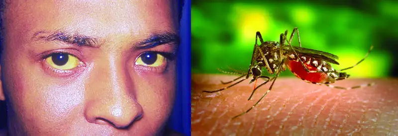
Yellow fever was once common in the southeastern US, with annual outbreaks of more than 25,000 infections in New Orleans in the mid-1800s.1 In the early 20th century, efforts to eradicate the virus that causes yellow fever were successful thanks to vaccination programs and effective control (mainly through the insecticide dichlorodiphenyltrichloroethane [DDT]) of Aedes aegypti, the mosquito that serves as a vector. Today, the virus has been largely eradicated in North America.
Elsewhere, efforts to contain yellow fever have been less successful. Despite mass vaccination campaigns in some regions, the risk for yellow fever epidemics is rising in dense urban cities in Africa and South America.2 In an increasingly globalized society, yellow fever could easily make a comeback in North America, where A. aegypti is still present. If these mosquitoes were exposed to infected individuals, new outbreaks would be possible.
Like yellow fever, many of the circulatory and lymphatic diseases discussed in this chapter are emerging or re-emerging worldwide. Despite medical advances, diseases like malaria, Ebola, and others could become endemic in the US given the right circumstances.
25.1 Anatomy of the Circulatory and Lymphatic Systems¶
Learning Objectives
By the end of this section, you will be able to:
- Describe the major anatomical features of the circulatory and lymphatic systems
- Explain why the circulatory and lymphatic systems lack normal microbiota
- Explain how microorganisms overcome defenses of the circulatory and lymphatic systems to cause infection
- Describe general signs and symptoms of disease associated with infections of the circulatory and lymphatic systems
Clinical Focus: Part 1
Barbara is a 43-year-old patient who has been diagnosed with metastatic inflammatory breast cancer. To facilitate her ongoing chemotherapy, her physician implanted a port attached to a central venous catheter. At a recent checkup, she reported feeling restless and complained that the site of the catheter had become uncomfortable. After removing the dressing, the physician observed that the surgical site appeared red and was warm to the touch, suggesting a localized infection. Barbara’s was also running a fever of 38.2 °C (100.8 °F). Her physician treated the affected area with a topical antiseptic and applied a fresh dressing. She also prescribed a course of the antibiotic oxacillin.
- Based on this information, what factors likely contributed to Barbara’s condition?
- What is the most likely source of the microbes involved?
Jump to the next Clinical Focus box.
The circulatory and lymphatic systems are networks of vessels and a pump that transport blood and lymph, respectively, throughout the body. When these systems are infected with a microorganism, the network of vessels can facilitate the rapid dissemination of the microorganism to other regions of the body, sometimes with serious results. In this section, we will examine some of the key anatomical features of the circulatory and lymphatic systems, as well as general signs and symptoms of infection.
The Circulatory System¶
The circulatory (or cardiovascular) system is a closed network of organs and vessels that moves blood around the body (Figure 25.2). The primary purposes of the circulatory system are to deliver nutrients, immune factors, and oxygen to tissues and to carry away waste products for elimination. The heart is a four-chambered pump that propels the blood throughout the body. Deoxygenated blood enters the right atrium through the superior vena cava and the inferior vena cava after returning from the body. The blood next passes through the tricuspid valve to enter the right ventricle. When the heart contracts, the blood from the right ventricle is pumped through the pulmonary arteries to the lungs. There, the blood is oxygenated at the alveoli and returns to the heart through the pulmonary veins. The oxygenated blood is received at the left atrium and proceeds through the mitral valve to the left ventricle. When the heart contracts, the oxygenated blood is pumped throughout the body via a series of thick-walled vessels called arteries. The first and largest artery is called the aorta. The arteries sequentially branch and decrease in size (and are called arterioles) until they end in a network of smaller vessels called capillaries. The capillary beds are located in the interstitial spaces within tissues and release nutrients, immune factors, and oxygen to those tissues. The capillaries connect to a series of vessels called venules, which increase in size to form the veins. The veins join together into larger vessels as they transfer blood back to the heart. The largest veins, the superior and inferior vena cava, return the blood to the right atrium.
![a) Diagram of the circulatory system. Blood from the lower part of the body travels to the heart in the inferior vena cava. Blood from the upper part of the body travels to the heart in the superior vena cava. The pulmonary artery travels from the heart to the lungs and the pulmonary vein travels from the lungs to the heart. B) A diagram of the heart showing the flow of blood. Beginning in the superior and inferior vena cavas, blood travels to the right atrium, through the tricuspid valve, to the right ventricle and out the pulmonary artery. The image does not follow the pulmonary artery. From the pulmonary vein blood travels to the left atrium, through the mitral valve, to the left ventricle and out the aorta. C) The layers of the heart. The Pericardium is the outer layer. The myocardium is the thick middle layer. The endocardium is the inner layer.](img/osc-microbio-25-01-circsyst.webp)
Other organs play important roles in the circulatory system as well. The kidneys filter the blood, removing waste products and eliminating them in the urine. The liver also filters the blood and removes damaged or defective red blood cells. The spleen filters and stores blood, removes damaged red blood cells, and is a reservoir for immune factors. All of these filtering structures serve as sites for entrapment of microorganisms and help maintain an environment free of microorganisms in the blood.
The Lymphatic System¶
The lymphatic system is also a network of vessels that run throughout the body (Figure 25.3). However, these vessels do not form a full circulating system and are not pressurized by the heart. Rather, the lymphatic system is an open system with the fluid moving in one direction from the extremities toward two drainage points into veins just above the heart. Lymphatic fluids move more slowly than blood because they are not pressurized. Small lymph capillaries interact with blood capillaries in the interstitial spaces in tissues. Fluids from the tissues enter the lymph capillaries and are drained away (Figure 25.4). These fluids, termed lymph, also contain large numbers of white blood cells.
![Diagram of the lymphatic system. Lymph notes are swellings on tubes (called lymph vessels) that travel throughout the body. The right lymphatic duct and entering vein are in the neck. A tonsil is a swelling on the lymph vessel in the mouth. The thymus is a lumpy structure on the heart. A close-up of a lymph node shows a roundish structure with many tubes attached to it. The central area has a box labeled “masses of lymphocytes and macrophages”. A close-up of this area shows tissue cells in the background with a blood capillary network. Lymph vessels run between the blood capillary network. Lymphatic capillaries are the ends of the lymph vessels. Fluid from around the cells (called interstitial fluid) enters the lymphatic capillaries and travels through the lymphatic vessels.](img/osc-microbio-25-01-lymphsyst.webp)
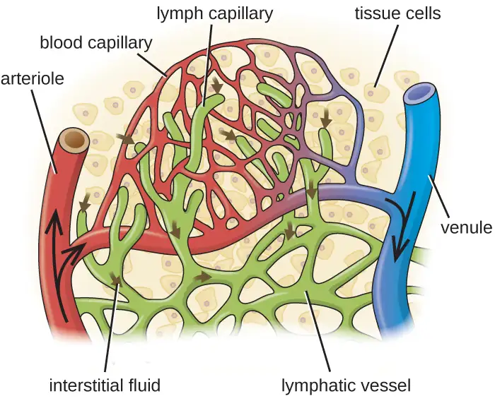
The lymphatic system contains two types of lymphoid tissues. The primary lymphoid tissue includes bone marrow and the thymus. Bone marrow contains the hematopoietic stem cells (HSC) that differentiate and mature into the various types of blood cells and lymphocytes (see Figure 17.12). The secondary lymphoid tissues include the spleen, lymph nodes, and several areas of diffuse lymphoid tissues underlying epithelial membranes. The spleen, an encapsulated structure, filters blood and captures pathogens and antigens that pass into it (Figure 25.5). The spleen contains specialized macrophages and dendritic cells that are crucial for antigen presentation, a mechanism critical for activation of T lymphocytes and B lymphocytes (see Major Histocompatibility Complexes and Antigen-Presenting Cells). Lymph nodes are bean-shaped organs situated throughout the body. These structures contain areas called germinal centers that are rich in B and T lymphocytes. The lymph nodes also contain macrophages and dendritic cells for antigen presentation. Lymph from nearby tissues enters the lymph node through afferent lymphatic vessels and encounters these lymphocytes as it passes through; the lymph exits the lymph node through the efferent lymphatic vessels (Figure 25.5).
![a) A diagram showing that the spleen is found at the end of the pancreas just under the diaphragm. The part closest to the pancreas is the hilium and contains the splenic artery and vein. B) a close-up of the spleen. Afferent lymphatic vessels are tubes that bring material in. Efferent lymphatic vessels are tubes that take material out of the spleen. Connective tissue forms a capsule around the outside; and a space under the capsule is labeled subcapsular sinus. The cortex of the spleen is the outer layer. And trabeculae are regions of cortex that fold in towards the center. Germinal centers are red structures in the cortex.](img/osc-microbio-25-01-spleenlnode.webp)
Link to Learning
The lymphatic system filters fluids that have accumulated in tissues before they are returned to the blood. A brief overview of this process is provided at this website.
Check Your Understanding
- What is the main function of the lymphatic system?
Infections of the Circulatory System¶
Under normal circumstances, the circulatory system and the blood should be sterile; the circulatory system has no normal microbiota. Because the system is closed, there are no easy portals of entry into the circulatory system for microbes. Those that are able to breach the body’s physical barriers and enter the bloodstream encounter a host of circulating immune defenses, such as antibodies, complement proteins, phagocytes, and other immune cells. Microbes often gain access to the circulatory system through a break in the skin (e.g., wounds, needles, intravenous catheters, insect bites) or spread to the circulatory system from infections in other body sites. For example, microorganisms causing pneumonia or renal infection may enter the local circulation of the lung or kidney and spread from there throughout the circulatory network.
If microbes in the bloodstream are not quickly eliminated, they can spread rapidly throughout the body, leading to serious, even life-threatening infections. Various terms are used to describe conditions involving microbes in the circulatory system. The term bacteremia refers to bacteria in the blood. If bacteria are reproducing in the blood as they spread, this condition is called septicemia. The presence of viruses in the blood is called viremia. Microbial toxins can also be spread through the circulatory system, causing a condition termed toxemia.
Microbes and microbial toxins in the blood can trigger an inflammatory response so severe that the inflammation damages host tissues and organs more than the infection itself. This counterproductive immune response is called systemic inflammatory response syndrome (SIRS), and it can lead to the life-threatening condition known as sepsis. Sepsis is characterized by the production of excess cytokines that leads to classic signs of inflammation such as fever, vasodilation, and edema (see Inflammation and Fever). In a patient with sepsis, the inflammatory response becomes dysregulated and disproportionate to the threat of infection. Critical organs such as the heart, lungs, liver, and kidneys become dysfunctional, resulting in increased heart and respiratory rates, and disorientation. If not treated promptly and effectively, patients with sepsis can go into shock and die.
Certain infections can cause inflammation in the heart and blood vessels. Inflammation of the endocardium, the inner lining of the heart, is called endocarditis and can result in damage to the heart valves severe enough to require surgical replacement. Inflammation of the pericardium, the sac surrounding the heart, is called pericarditis. The term myocarditis refers to the inflammation of the heart’s muscle tissue. Pericarditis and myocarditis can cause fluid to accumulate around the heart, resulting in congestive heart failure. Inflammation of blood vessels is called vasculitis. Although somewhat rare, vasculitis can cause blood vessels to become damaged and rupture; as blood is released, small red or purple spots called petechiae appear on the skin. If the damage of tissues or blood vessels is severe, it can result in reduced blood flow to the surrounding tissues. This condition is called ischemia, and it can be very serious. In severe cases, the affected tissues can die and become necrotic; these situations may require surgical debridement or amputation.
Check Your Understanding
- Why does the circulatory system have no normal microbiota?
- Explain why the presence of microbes in the circulatory system can lead to serious consequences.
Infections of the Lymphatic System¶
Like the circulatory system, the lymphatic system does not have a normal microbiota, and the large numbers of immune cells typically eliminate transient microbes before they can establish an infection. Only microbes with an array of virulence factors are able to overcome these defenses and establish infection in the lymphatic system. However, when a localized infection begins to spread, the lymphatic system is often the first place the invading microbes can be detected.
Infections in the lymphatic system also trigger an inflammatory response. Inflammation of lymphatic vessels, called lymphangitis, can produce visible red streaks under the skin. Inflammation in the lymph nodes can cause them to swell. A swollen lymph node is referred to as a bubo, and the condition is referred to as lymphadenitis.
25.2 Bacterial Infections of the Circulatory and Lymphatic Systems¶
Learning Objectives
By the end of this section, you will be able to:
- Identify and compare bacteria that most commonly cause infections of the circulatory and lymphatic systems
- Compare the major characteristics of specific bacterial diseases affecting the circulatory and lymphatic systems
Bacteria can enter the circulatory and lymphatic systems through acute infections or breaches of the skin barrier or mucosa. Breaches may occur through fairly common occurrences, such as insect bites or small wounds. Even the act of tooth brushing, which can cause small ruptures in the gums, may introduce bacteria into the circulatory system. In most cases, the bacteremia that results from such common exposures is transient and remains below the threshold of detection. In severe cases, bacteremia can lead to septicemia with dangerous complications such as toxemia, sepsis, and septic shock. In these situations, it is often the immune response to the infection that results in the clinical signs and symptoms rather than the microbes themselves.
Bacterial Sepsis, Septic and Toxic Shock¶
At low concentrations, pro-inflammatory cytokines such as interleukin 1 (IL-1) and tumor necrosis factor-α (TNF-α) play important roles in the host’s immune defenses. When they circulate systemically in larger amounts, however, the resulting immune response can be life threatening. IL-1 induces vasodilation (widening of blood vessels) and reduces the tight junctions between vascular endothelial cells, leading to widespread edema. As fluids move out of circulation into tissues, blood pressure begins to drop. If left unchecked, the blood pressure can fall below the level necessary to maintain proper kidney and respiratory functions, a condition known as septic shock. In addition, the excessive release of cytokines during the inflammatory response can lead to the formation of blood clots. The loss of blood pressure and occurrence of blood clots can result in multiple organ failure and death.
Bacteria are the most common pathogens associated with the development of sepsis, and septic shock.3 The most common infection associated with sepsis is bacterial pneumonia (see Bacterial Infections of the Respiratory Tract), accounting for about half of all cases, followed by intra-abdominal infections (Bacterial Infections of the Gastrointestinal Tract) and urinary tract infections (Bacterial Infections of the Urinary System).4 Infections associated with superficial wounds, animal bites, and indwelling catheters may also lead to sepsis and septic shock.
These initially minor, localized infections can be caused by a wide range of different bacteria, including Staphylococcus, Streptococcus, Pseudomonas, Pasteurella, Acinetobacter, and members of the Enterobacteriaceae. However, if left untreated, infections by these gram-positive and gram-negative pathogens can potentially progress to sepsis, shock, and death.
Toxic Shock Syndrome and Streptococcal Toxic Shock-Like Syndrome¶
Toxemia associated with infections caused by Staphylococcus aureus can cause staphylococcal toxic shock syndrome (TSS). Some strains of S. aureus produce a superantigen called toxic shock syndrome toxin-1 (TSST-1). TSS may occur as a complication of other localized or systemic infections such as pneumonia, osteomyelitis, sinusitis, and skin wounds (surgical, traumatic, or burns). Those at highest risk for staphylococcal TSS are people with preexisting S. aureus colonization of the vagina who leave tampons, contraceptive sponges, diaphragms, or other devices in the vagina for longer than the recommended time.
Staphylococcal TSS is characterized by sudden onset of vomiting, diarrhea, myalgia, body temperature higher than 38.9 °C (102.0 °F), and rapid-onset hypotension with a systolic blood pressure less than 90 mm Hg for adults; a diffuse erythematous rash that leads to peeling and shedding skin 1 to 2 weeks after onset; and additional involvement of three or more organ systems.5 The mortality rate associated with staphylococcal TSS is less than 3% of cases.
Diagnosis of staphylococcal TSS is based on clinical signs, symptoms, serologic tests to confirm bacterial species, and the detection of toxin production from staphylococcal isolates. Cultures of skin and blood are often negative; less than 5% are positive in cases of staphylococcal TSS. Treatment for staphylococcal TSS includes decontamination, debridement, vasopressors to elevate blood pressure, and antibiotic therapy with clindamycin plus vancomycin or daptomycin pending susceptibility results.
A syndrome with signs and symptoms similar to staphylococcal TSS can be caused by Streptococcus pyogenes. This condition, called streptococcal toxic shock-like syndrome (STSS), is characterized by more severe pathophysiology than staphylococcal TSS,6 with about 50% of patients developing S. pyogenes bacteremia and necrotizing fasciitis. In contrast to staphylococcal TSS, STSS is more likely to cause acute respiratory distress syndrome (ARDS), a rapidly progressive disease characterized by fluid accumulation in the lungs that inhibits breathing and causes hypoxemia (low oxygen levels in the blood). STSS is associated with a higher mortality rate (20%–60%), even with aggressive therapy. STSS usually develops in patients with a streptococcal soft-tissue infection such as bacterial cellulitis, necrotizing fasciitis, pyomyositis (pus formation in muscle caused by infection), a recent influenza A infection, or chickenpox.
Check Your Understanding
- How can large amounts of pro-inflammatory cytokines lead to septic shock?
Clinical Focus: Part 2
Despite oxacillin therapy, Barbara’s condition continued to worsen over the next several days. Her fever increased to 40.1 °C (104.2 °F) and she began to experience chills, rapid breathing, and confusion. Her doctor suspected bacteremia by a drug-resistant bacterium and admitted Barbara to the hospital. Cultures of the surgical site and blood revealed Staphylococcus aureus. Antibiotic susceptibility testing confirmed that the isolate was methicillin-resistant S. aureus (MRSA). In response, Barbara’s doctor changed her antibiotic therapy to vancomycin and arranged to have the port and venous catheter removed.
- Why did Barbara’s infection not respond to oxacillin therapy?
- Why did the physician have the port and catheter removed?
- Based on the signs and symptoms described, what are some possible diagnoses for Barbara’s condition?
Jump to the next Clinical Focus feature box. Go back to the previous Clinical Focus feature box.
Puerperal Sepsis¶
A type of sepsis called puerperal sepsis, also known as puerperal infection, puerperal fever, or childbed fever, is a nosocomial infection associated with the period of puerperium—the time following childbirth during which a person's reproductive system returns to a nonpregnant state. Such infections may originate in the genital tract, breast, urinary tract, or a surgical wound. Initially the infection may be limited to the uterus or other local site of infection, but it can quickly spread, resulting in peritonitis, septicemia, and death. Before the 19th century work of Ignaz Semmelweis and the widespread acceptance of germ theory (see Modern Foundations of Cell Theory), puerperal sepsis was a major cause of mortality among new mothers in the first few days following childbirth.
Puerperal sepsis is often associated with Streptococcus pyogenes, but numerous other bacteria can also be responsible. Examples include gram-positive bacterial (e.g. Streptococcus spp., Staphylococcus spp., and Enterococcus spp.), gram-negative bacteria (e.g. Chlamydia spp., Escherichia coli, Klebsiella spp., and Proteus spp.), as well as anaerobes such as Peptostreptococcus spp., Bacteroides spp., and Clostridium spp. In cases caused by S. pyogenes, the bacteria attach to host tissues using M protein and produce a carbohydrate capsule to avoid phagocytosis. S. pyogenes also produces a variety of exotoxins, like streptococcal pyrogenic exotoxins A and B, that are associated with virulence and may function as superantigens.
Diagnosis of puerperal fever is based on the timing and extent of fever and isolation, and identification of the etiologic agent in blood, wound, or urine specimens. Because there are numerous possible causes, antimicrobial susceptibility testing must be used to determine the best antibiotic for treatment. Nosocomial incidence of puerperal fever can be greatly reduced through the use of antiseptics during delivery and strict adherence to handwashing protocols by doctors, midwives, and nurses.
Infectious Arthritis¶
Also called septic arthritis, infectious arthritis can be either an acute or a chronic condition. Infectious arthritis is characterized by inflammation of joint tissues and is most often caused by bacterial pathogens. Most cases of acute infectious arthritis are secondary to bacteremia, with a rapid onset of moderate to severe joint pain and swelling that limits the motion of the affected joint. In adults and young children, the infective pathogen is most often introduced directly through injury, such as a wound or a surgical site, and brought to the joint through the circulatory system. Acute infections may also occur after joint replacement surgery. Acute infectious arthritis often occurs in patients with an immune system impaired by other viral and bacterial infections. S. aureus is the most common cause of acute septic arthritis in the general population of adults and young children. Neisseria gonorrhoeae is an important cause of acute infectious arthritis in sexually active individuals.
Chronic infectious arthritis is responsible for 5% of all infectious arthritis cases and is more likely to occur in patients with other illnesses or conditions. Patients at risk include those who have an HIV infection, a bacterial or fungal infection, prosthetic joints, rheumatoid arthritis (RA), or who are undergoing immunosuppressive chemotherapy. Onset is often in a single joint; there may be little or no pain, aching pain that may be mild, gradual swelling, mild warmth, and minimal or no redness of the joint area.
Diagnosis of infectious arthritis requires the aspiration of a small quantity of synovial fluid from the afflicted joint. Direct microscopic evaluation, culture, antimicrobial susceptibility testing, and polymerase chain reaction (PCR) analyses of the synovial fluid are used to identify the potential pathogen. Typical treatment includes administration of appropriate antimicrobial drugs based on antimicrobial susceptibility testing. For nondrug-resistant bacterial strains, β-lactams such as oxacillin and cefazolin are often prescribed for staphylococcal infections. Third-generation cephalosporins (e.g., ceftriaxone) are used for increasingly prevalent β-lactam-resistant Neisseria infections. Infections by Mycobacterium spp. or fungi are treated with appropriate long-term antimicrobial therapy. Even with treatment, the prognosis is often poor for those infected. About 40% of patients with nongonnococcal infectious arthritis will suffer permanent joint damage and mortality rates range from 5% to 20%.7 Mortality rates are higher among the elderly.8
Osteomyelitis¶
Osteomyelitis is an inflammation of bone tissues most commonly caused by infection. These infections can either be acute or chronic and can involve a variety of different bacteria. The most common causative agent of osteomyelitis is S. aureus. However, M. tuberculosis, Pseudomonas aeruginosa, Streptococcus pyogenes, S. agalactiae, species in the Enterobacteriaceae, and other microorganisms can also cause osteomyelitis, depending on which bones are involved. In adults, bacteria usually gain direct access to the bone tissues through trauma or a surgical procedure involving prosthetic joints. In children, the bacteria are often introduced from the bloodstream, possibly spreading from focal infections. The long bones, such as the femur, are more commonly affected in children because of the more extensive vascularization of bones in the young.9
The signs and symptoms of osteomyelitis include fever, localized pain, swelling due to edema, and ulcers in soft tissues near the site of infection. The resulting inflammation can lead to tissue damage and bone loss. In addition, the infection may spread to joints, resulting in infectious arthritis, or disseminate into the blood, resulting in sepsis and thrombosis (formation of blood clots). Like septic arthritis, osteomyelitis is usually diagnosed using a combination of radiography, imaging, and identification of bacteria from blood cultures, or from bone cultures if blood cultures are negative. Parenteral antibiotic therapy is typically used to treat osteomyelitis. Because of the number of different possible etiologic agents, however, a variety of drugs might be used. Broad-spectrum antibacterial drugs such as nafcillin, oxacillin, or cephalosporin are typically prescribed for acute osteomyelitis, and ampicillin and piperacillin/tazobactam for chronic osteomyelitis. In cases of antibiotic resistance, vancomycin treatment is sometimes required to control the infection. In serious cases, surgery to remove the site of infection may be required. Other forms of treatment include hyperbaric oxygen therapy (see Using Physical Methods to Control Microorganisms) and implantation of antibiotic beads or pumps.
Check Your Understanding
- What bacterium the most common cause of both septic arthritis and osteomyelitis?
Rheumatic Fever¶
Infections with S. pyogenes have a variety of manifestations and complications generally called sequelae. As mentioned, the bacterium can cause suppurative infections like puerperal fever. However, this microbe can also cause nonsuppurative sequelae in the form of acute rheumatic fever (ARF), which can lead to rheumatic heart disease, thus impacting the circulatory system. Rheumatic fever occurs primarily in children a minimum of 2–3 weeks after an episode of untreated or inadequately treated pharyngitis (see Bacterial Infections of the Respiratory Tract). At one time, rheumatic fever was a major killer of children in the US; today, however, it is rare in the US because of early diagnosis and treatment of streptococcal pharyngitis with antibiotics. In parts of the world where diagnosis and treatment are not readily available, acute rheumatic fever and rheumatic heart disease are still major causes of mortality in children.10
Rheumatic fever is characterized by a variety of diagnostic signs and symptoms caused by nonsuppurative, immune-mediated damage resulting from a cross-reaction between patient antibodies to bacterial surface proteins and similar proteins found on cardiac, neuronal, and synovial tissues. Damage to the nervous tissue or joints, which leads to joint pain and swelling, is reversible. However, damage to heart valves can be irreversible and is worsened by repeated episodes of acute rheumatic fever, particularly during the first 3–5 years after the first rheumatic fever attack. The inflammation of the heart valves caused by cross-reacting antibodies leads to scarring and stiffness of the valve leaflets. This, in turn, produces a characteristic heart murmur. Patients who have previously developed rheumatic fever and who subsequently develop recurrent pharyngitis due to S. pyogenes are at high risk for a recurrent attacks of rheumatic fever.
The American Heart Association recommends11 a treatment regimen consisting of benzathine benzylpenicillin every 3 or 4 weeks, depending on the patient’s risk for reinfection. Additional prophylactic antibiotic treatment may be recommended depending on the age of the patient and risk for reinfection.
Bacterial Endocarditis and Pericarditis¶
The endocardium is a tissue layer that lines the muscles and valves of the heart. This tissue can become infected by a variety of bacteria, including gram-positive cocci such as Staphylococcus aureus, viridans streptococci, and Enterococcus faecalis, and the gram-negative so-called HACEK bacilli: Haemophilus spp., Actinobacillus actinomycetemcomitans, Cardiobacterium hominis, Eikenella corrodens, and Kingella kingae. The resulting inflammation is called endocarditis, which can be described as either acute or subacute. Causative agents typically enter the bloodstream during accidental or intentional breaches in the normal barrier defenses (e.g., dental procedures, body piercings, catheterization, wounds). Individuals with preexisting heart damage, prosthetic valves and other cardiac devices, and those with a history of rheumatic fever have a higher risk for endocarditis. This disease can rapidly destroy the heart valves and, if untreated, lead to death in just a few days.
In subacute bacterial endocarditis, heart valve damage occurs slowly over a period of months. During this time, blood clots form in the heart, and these protect the bacteria from phagocytes. These patches of tissue-associated bacteria are called vegetations. The resulting damage to the heart, in part resulting from the immune response causing fibrosis of heart valves, can necessitate heart valve replacement (Figure 25.6). Outward signs of subacute endocarditis may include a fever.
Diagnosis of infective endocarditis is determined using the combination of blood cultures, echocardiogram, and clinical symptoms. In both acute and subacute endocarditis, treatment typically involves relatively high doses of intravenous antibiotics as determined by antimicrobial susceptibility testing. Acute endocarditis is often treated with a combination of ampicillin, nafcillin, and gentamicin for synergistic coverage of Staphylococcus spp. and Streptococcus spp. Prosthetic-valve endocarditis is often treated with a combination of vancomycin, rifampin, and gentamicin. Rifampin is necessary to treat individuals with infection of prosthetic valves or other foreign bodies because rifampin can penetrate the biofilm of most of the pathogens that infect these devices.
Staphylcoccus spp. and Streptococcus spp. can also infect and cause inflammation in the tissues surrounding the heart, a condition called acute pericarditis. Pericarditis is marked by chest pain, difficulty breathing, and a dry cough. In most cases, pericarditis is self-limiting and clinical intervention is not necessary. Diagnosis is made with the aid of a chest radiograph, electrocardiogram, echocardiogram, aspirate of pericardial fluid, or biopsy of pericardium. Antibacterial medications may be prescribed for infections associated with pericarditis; however, pericarditis can also be caused other pathogens, including viruses (e.g., echovirus, influenza virus), fungi (e.g., Histoplasma spp., Coccidioides spp.), and eukaryotic parasites (e.g., Toxoplasma spp.).
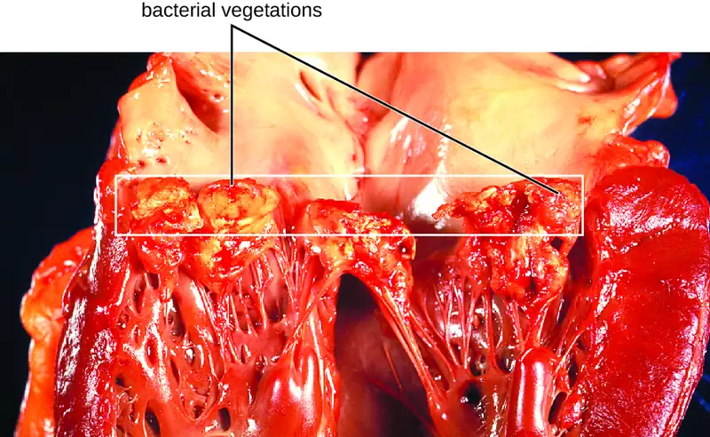
Check Your Understanding
- Compare acute and subacute bacterial endocarditis.
Gas Gangrene¶
Traumatic injuries or certain medical conditions, such as diabetes, can cause damage to blood vessels that interrupts blood flow to a region of the body. When blood flow is interrupted, tissues begin to die, creating an anaerobic environment in which anaerobic bacteria can thrive. This condition is called ischemia. Endospores of the anaerobic bacterium Clostridium perfringens (along with a number of other Clostridium spp. from the gut) can readily germinate in ischemic tissues and colonize the anaerobic tissues.
The resulting infection, called gas gangrene, is characterized by rapidly spreading myonecrosis (death of muscle tissue). The patient experiences a sudden onset of excruciating pain at the infection site and the rapid development of a foul-smelling wound containing gas bubbles and a thin, yellowish discharge tinged with a small amount of blood. As the infection progresses, edema and cutaneous blisters containing bluish-purple fluid form. The infected tissue becomes liquefied and begins sloughing off. The margin between necrotic and healthy tissue often advances several inches per hour even with antibiotic therapy. Septic shock and organ failure frequently accompany gas gangrene; when patients develop sepsis, the mortality rate is greater than 50%.
α-Toxin and theta (θ) toxin are the major virulence factors of C. perfringens implicated in gas gangrene. α-Toxin is a lipase responsible for breaking down cell membranes; it also causes the formation of thrombi (blood clots) in blood vessels, contributing to the spread of ischemia. θ-Toxin forms pores in the patient’s cell membranes, causing cell lysis. The gas associated with gas gangrene is produced by Clostridium’s fermentation of butyric acid, which produces hydrogen and carbon dioxide that are released as the bacteria multiply, forming pockets of gas in tissues (Figure 25.7).
Gas gangrene is initially diagnosed based on the presence of the clinical signs and symptoms described earlier in this section. Diagnosis can be confirmed through Gram stain and anaerobic cultivation of wound exudate (drainage) and tissue samples on blood agar. Treatment typically involves surgical debridement of any necrotic tissue; advanced cases may require amputation. Surgeons may also use vacuum-assisted closure (VAC), a surgical technique in which vacuum-assisted drainage is used to remove blood or serous fluid from a wound or surgical site to speed recovery. The most common antibiotic treatments include penicillin G and clindamycin. Some cases are also treated with hyperbaric oxygen therapy because Clostridium spp. are incapable of surviving in oxygen-rich environments.
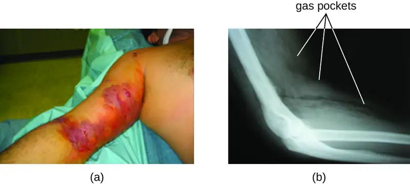
Tularemia¶
Infection with the gram-negative bacterium Francisella tularensis causes tularemia (or rabbit fever), a zoonotic infection in humans. F. tularensis is a facultative intracellular parasite that primarily causes illness in rabbits, although a wide variety of domesticated animals are also susceptible to infection. Humans can be infected through ingestion of contaminated meat or, more typically, handling of infected animal tissues (e.g., skinning an infected rabbit). Tularemia can also be transmitted by the bites of infected arthropods, including the dog tick (Dermacentor variabilis), the lone star tick (Amblyomma americanum), the wood tick (Dermacentor andersoni), and deer flies (Chrysops spp.). Although the disease is not directly communicable between humans, exposure to aerosols of F. tularensis can result in life-threatening infections. F. tularensis is highly contagious, with an infectious dose of as few as 10 bacterial cells. In addition, pulmonary infections have a 30%–60% fatality rate if untreated.12 For these reasons, F. tularensis is currently classified and must be handled as a biosafety level-3 (BSL-3) organism and as a potential biological warfare agent.
Following introduction through a break in the skin, the bacteria initially move to the lymph nodes, where they are ingested by phagocytes. After escaping from the phagosome, the bacteria grow and multiply intracellularly in the cytoplasm of phagocytes. They can later become disseminated through the blood to other organs such as the liver, lungs, and spleen, where they produce masses of tissue called granulomas (Figure 25.8). After an incubation period of about 3 days, skin lesions develop at the site of infection. Other signs and symptoms include fever, chills, headache, and swollen and painful lymph nodes.
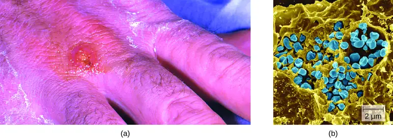
A direct diagnosis of tularemia is challenging because it is so contagious. Once a presumptive diagnosis of tularemia is made, special handling is required to collect and process patients’ specimens to prevent the infection of health-care workers. Specimens suspected of containing F. tularensis can only be handled by BSL-2 or BSL-3 laboratories registered with the Federal Select Agent Program, and individuals handling the specimen must wear protective equipment and use a class II biological safety cabinet.
Tularemia is relatively rare in the US, and its signs and symptoms are similar to a variety of other infections that may need to be ruled out before a diagnosis can be made. Direct fluorescent-antibody (DFA) microscopic examination using antibodies specific for F. tularensis can rapidly confirm the presence of this pathogen. Culturing this microbe is difficult because of its requirement for the amino acid cysteine, which must be supplied as an extra nutrient in culturing media. Serological tests are available to detect an immune response against the bacterial pathogen. In patients with suspected infection, acute- and convalescent-phase serum samples are required to confirm an active infection. PCR-based tests can also be used for clinical identification of direct specimens from body fluids or tissues as well as cultured specimens. In most cases, diagnosis is based on clinical findings and likely incidents of exposure to the bacterium. The antibiotics streptomycin, gentamycin, doxycycline, and ciprofloxacin are effective in treating tularemia.
Brucellosis¶
Species in the genus Brucella are gram-negative facultative intracellular pathogens that appear as coccobacilli. Several species cause zoonotic infections in animals and humans, four of which have significant human pathogenicity: B. abortus from cattle and buffalo, B. canis from dogs, B. suis from swine, and B. melitensis from goats, sheep, and camels. Infections by these pathogens are called brucellosis, also known as undulant fever, “Mediterranean fever,” or “Malta fever.” Alice Katherine Evans first determined that Brucella infections present in cows could be transmitted to humans through milk. Her findings were disputed for years before being accepted; people began pasteurizing milk (heating it to interfere with microorganisms), which led to a sharp reduction in the related diseases. Vaccination of animals has made brucellosis a rare disease in the US, but it is still common in the Mediterranean, south and central Asia, Central and South America, and the Caribbean. Human infections are primarily associated with the ingestion of meat or unpasteurized dairy products from infected animals. Infection can also occur through inhalation of bacteria in aerosols when handling animal products, or through direct contact with skin wounds. In the US, most cases of brucellosis are found in individuals with extensive exposure to potentially infected animals (e.g., slaughterhouse workers, veterinarians).
Two important virulence factors produced by Brucella spp. are urease, which allows ingested bacteria to avoid destruction by stomach acid, and lipopolysaccharide (LPS), which allows the bacteria to survive within phagocytes. After gaining entry to tissues, the bacteria are phagocytized by host neutrophils and macrophages. The bacteria then escape from the phagosome and grow within the cytoplasm of the cell. Bacteria phagocytized by macrophages are disseminated throughout the body. This results in the formation of granulomas within many body sites, including bone, liver, spleen, lung, genitourinary tract, brain, heart, eye, and skin. Acute infections can result in undulant (relapsing) fever, but untreated infections develop into chronic disease that usually manifests as acute febrile illness (fever of 40–41 °C [104–105.8 °F]) with recurring flu-like signs and symptoms.
Brucella is only reliably found in the blood during the acute fever stage; it is difficult to diagnose by cultivation. In addition, Brucella is considered a BSL-3 pathogen and is hazardous to handle in the clinical laboratory without protective clothing and at least a class II biological safety cabinet. Agglutination tests are most often used for serodiagnosis. In addition, enzyme-linked immunosorbent assays (ELISAs) are available to determine exposure to the organism. The antibiotics doxycycline or ciprofloxacin are typically prescribed in combination with rifampin; gentamicin, streptomycin, and trimethoprim-sulfamethoxazole (TMP-SMZ) are also effective against Brucella infections and can be used if needed.
Check Your Understanding
- Compare the pathogenesis of tularemia and brucellosis.
Cat-Scratch Disease¶
The zoonosis cat-scratch disease (CSD) (or cat-scratch fever) is a bacterial infection that can be introduced to the lymph nodes when a human is bitten or scratched by a cat. It is caused by the facultative intracellular gram-negative bacterium Bartonella henselae. Cats can become infected from flea feces containing B. henselae that they ingest while grooming. Humans become infected when flea feces or cat saliva (from claws or licking) containing B. henselae are introduced at the site of a bite or scratch. Once introduced into a wound, B. henselae infects red blood cells.
B. henselae invasion of red blood cells is facilitated by adhesins associated with outer membrane proteins and a secretion system that mediates transport of virulence factors into the host cell. Evidence of infection is indicated if a small nodule with pus forms in the location of the scratch 1 to 3 weeks after the initial injury. The bacteria then migrate to the nearest lymph nodes, where they cause swelling and pain. Signs and symptoms may also include fever, chills, and fatigue. Most infections are mild and tend to be self-limiting. However, immunocompromised patients may develop bacillary angiomatosis (BA), characterized by the proliferation of blood vessels, resulting in the formation of tumor-like masses in the skin and internal organs; or bacillary peliosis (BP), characterized by multiple cyst-like, blood-filled cavities in the liver and spleen. Most cases of CSD can be prevented by keeping cats free of fleas and promptly cleaning a cat scratch with soap and warm water.
The diagnosis of CSD is difficult because the bacterium does not grow readily in the laboratory. When necessary, immunofluorescence, serological tests, PCR, and gene sequencing can be performed to identify the bacterial species. Given the limited nature of these infections, antibiotics are not normally prescribed. For immunocompromised patients, rifampin, azithromycin, ciprofloxacin, gentamicin (intramuscularly), or TMP-SMZ are generally the most effective options.
Rat-Bite Fever¶
The zoonotic infection rat-bite fever can be caused by two different gram-negative bacteria: Streptobacillus moniliformis, which is more common in North America, and Spirillum minor, which is more common in Asia. Because of modern sanitation efforts, rat bites are rare in the US. However, contact with fomites, food, or water contaminated by rat feces or body fluids can also cause infections. Signs and symptoms of rat-bite fever include fever, vomiting, myalgia (muscle pain), arthralgia (joint pain), and a maculopapular rash on the hands and feet. An ulcer may also form at the site of a bite, along with some swelling of nearby lymph nodes. In most cases, the infection is self-limiting. Little is known about the virulence factors that contribute to these signs and symptoms of disease.
Cell culture, MALDI-TOF mass spectrometry, PCR, or ELISA can be used in the identification of Streptobacillus moniliformis. The diagnosis Spirillum minor may be confirmed by direct microscopic observation of the pathogens in blood using Giemsa or Wright stains, or darkfield microscopy. Serological tests can be used to detect a host immune response to the pathogens after about 10 days. The most commonly used antibiotics to treat these infections are penicillin or doxycycline.
Plague¶
The gram-negative bacillus Yersinia pestis causes the zoonotic infection plague. This bacterium causes acute febrile disease in animals, usually rodents or other small mammals, and humans. The disease is associated with a high mortality rate if left untreated. Historically, Y. pestis has been responsible for several devastating pandemics, resulting in millions of deaths (see Micro Connections: The History of the Plague). There are three forms of plague: bubonic plague (the most common form, accounting for about 80% of cases), pneumonic plague, and septicemic plague. These forms are differentiated by the mode of transmission and the initial site of infection. Figure 25.9 illustrates these various modes of transmission and infection between animals and humans.
In bubonic plague, Y. pestis is transferred by the bite of infected fleas. Since most flea bites occur on the legs and ankles, Y. pestis is often introduced into the tissues and blood circulation in the lower extremities. After a 2- to 6-day incubation period, patients experience an abrupt onset fever (39.5–41 °C [103.1–105.8 °F]), headache, hypotension, and chills. The pathogen localizes in lymph nodes, where it causes inflammation, swelling, and hemorrhaging that results in purple buboes (Figure 25.10). Buboes often form in lymph nodes of the groin first because these are the nodes associated with the lower limbs; eventually, through circulation in the blood and lymph, lymph nodes throughout the body become infected and form buboes. The average mortality rate for bubonic plague is about 55% if untreated and about 10% with antibiotic treatment.
Septicemic plague occurs when Y. pestis is directly introduced into the bloodstream through a cut or wound and circulates through the body. The incubation period for septicemic plague is 1 to 3 days, after which patients develop fever, chills, extreme weakness, abdominal pain, and shock. Disseminated intravascular coagulation (DIC) can also occur, resulting in the formation of thrombi that obstruct blood vessels and promote ischemia and necrosis in surrounding tissues (Figure 25.10). Necrosis occurs most commonly in extremities such as fingers and toes, which become blackened. Septicemic plague can quickly lead to death, with a mortality rate near 100% when it is untreated. Even with antibiotic treatment, the mortality rate is about 50%.
Pneumonic plague occurs when Y. pestis causes an infection of the lungs. This can occur through inhalation of aerosolized droplets from an infected individual or when the infection spreads to the lungs from elsewhere in the body in patients with bubonic or septicemic plague. After an incubation period of 1 to 3 days, signs and symptoms include fever, headache, weakness, and a rapidly developing pneumonia with shortness of breath, chest pain, and cough producing bloody or watery mucus. The pneumonia may result in rapid respiratory failure and shock. Pneumonic plague is the only form of plague that can be spread from person to person by infectious aerosol droplet. If untreated, the mortality rate is near 100%; with antibiotic treatment, the mortality rate is about 50%.
![Diagram of plague transmission. The sylvantic rodent-flea cycle is when rodents (such as squirrels and chipmunks) and fleas transmit the pathogen to each other. Fleas and rodents can also transmit the pathogen to birds, which can carry the pathogen long distances. Fleas can also transmit to cows, which can then transmit to humans. Fleas can also transmit to rodents, which are involved in long-distance transport if the travel on a boat. The urban rodent-flea cycle is when urban rodents (such as mice) and fleas transmit the pathogen to each other. Fleas can infect humans. Pneumonic transmission in humans is when one human transmits to another via the airborne route. Humans can carry the pathogen long distances when they travel. The squirrels and chipmunks in the sylvatic cycle can also transmit to humans; or they can transmit to cats which can then transmit to humans.](img/osc-microbio-25-02-plaguetran.webp)
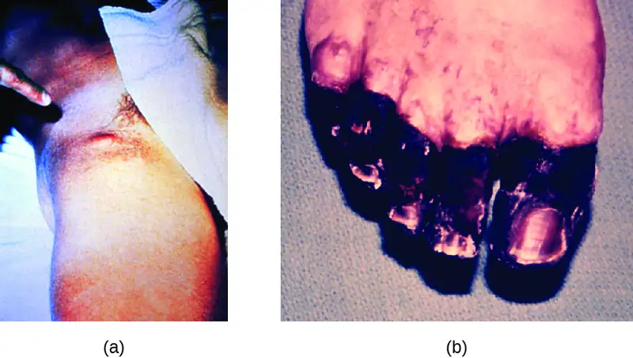
The high mortality rate for the plague is, in part, a consequence of it being unusually well equipped with virulence factors. To date, there are at least 15 different major virulence factors that have been identified from Y. pestis and, of these, eight are involved with adherence to host cells. In addition, the F1 component of the Y. pestis capsule is a virulence factor that allows the bacterium to avoid phagocytosis. F1 is produced in large quantities during mammalian infection and is the most immunogenic component.13 Successful use of virulence factors allows the bacilli to disseminate from the area of the bite to regional lymph nodes and eventually the entire blood and lymphatic systems.
Culturing and direct microscopic examination of a sample of fluid from a bubo, blood, or sputum is the best way to identify Y. pestis and confirm a presumptive diagnosis of plague. Specimens may be stained using either a Gram, Giemsa, Wright, or Wayson's staining technique (Figure 25.11). The bacteria show a characteristic bipolar staining pattern, resembling safety pins, that facilitates presumptive identification. Direct fluorescent antibody tests (rapid test of outer-membrane antigens) and serological tests like ELISA can be used to confirm the diagnosis. The confirmatory method for identifying Y. pestis isolates in the US is bacteriophage lysis.
Prompt antibiotic therapy can resolve most cases of bubonic plague, but septicemic and pneumonic plague are more difficult to treat because of their shorter incubation stages. Survival often depends on an early and accurate diagnosis and an appropriate choice of antibiotic therapy. In the US, the most common antibiotics used to treat patients with plague are gentamicin, fluoroquinolones, streptomycin, levofloxacin, ciprofloxacin, and doxycycline.
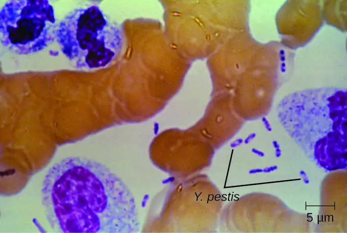
Check Your Understanding
- Compare bubonic plague, septicemic plague, and pneumonic plague.
Micro Connections: The History of the Plague
The first recorded pandemic of plague, the Justinian plague, occurred in the sixth century CE. It is thought to have originated in central Africa and spread to the Mediterranean through trade routes. At its peak, more than 5,000 people died per day in Constantinople alone. Ultimately, one-third of that city’s population succumbed to plague.14 The impact of this outbreak probably contributed to the later fall of Emperor Justinian.
The second major pandemic, dubbed the Black Death, occurred during the 14th century. This time, the infections are thought to have originated somewhere in Asia before being transported to Europe by trade, soldiers, and war refugees. This outbreak killed an estimated one-quarter of the population of Europe (25 million, primarily in major cities). In addition, at least another 25 million are thought to have been killed in Asia and Africa.15 This second pandemic, associated with strain Yersinia pestis biovar Medievalis, cycled for another 300 years in Europe and Great Britain, and was called the Great Plague in the 1660s.
The most recent pandemic occurred in the 1890s with Yersinia pestis biovar Orientalis. This outbreak originated in the Yunnan province of China and spread worldwide through trade. It is at this time that plague made its way to the US. The etiologic agent of plague was discovered by Alexandre Yersin (1863–1943) during this outbreak as well. The overall number of deaths was lower than in prior outbreaks, perhaps because of improved sanitation and medical support.16 Most of the deaths attributed to this final pandemic occurred in India.
Link to Learning
Visit this link to see a video describing how similar the genome of the Black Death bacterium is to today’s strains of bubonic plague.
Zoonotic Febrile Diseases¶
A wide variety of zoonotic febrile diseases (diseases that cause fever) are caused by pathogenic bacteria that require arthropod vectors. These pathogens are either obligate intracellular species of Anaplasma, Bartonella, Ehrlichia, Orientia, and Rickettsia, or spirochetes in the genus Borrelia. Isolation and identification of pathogens in this group are best performed in BSL-3 laboratories because of the low infective dose associated with the diseases.
Anaplasmosis¶
The zoonotic tickborne disease human granulocytic anaplasmosis (HGA) is caused by the obligate intracellular pathogen Anaplasma phagocytophilum. HGA is endemic primarily in the central and northeastern US and in countries in Europe and Asia.
HGA is usually a mild febrile disease that causes flu-like symptoms in immunocompetent patients; however, symptoms are severe enough to require hospitalization in at least 50% of infections and, of those patients, less than 1% will die of HGA.17 Small mammals such as white-footed mice, chipmunks, and voles have been identified as reservoirs of A. phagocytophilum, which is transmitted by the bite of an Ixodes tick. Five major virulence factors18 have been reported in Anaplasma; three are adherence factors and two are factors that allow the pathogen to avoid the human immune response. Diagnostic approaches include locating intracellular microcolonies of Anaplasma through microscopic examination of neutrophils or eosinophils stained with Giemsa or Wright stain, PCR for detection of A. phagocytophilum, and serological tests to detect antibody titers against the pathogens. The primary antibiotic used for treatment is doxycycline.
Ehrlichiosis¶
Human monocytotropic ehrlichiosis (HME) is a zoonotic tickborne disease caused by the BSL-2, obligate intracellular pathogen Ehrlichia chaffeensis. Currently, the geographic distribution of HME is primarily the eastern half of the US, with a few cases reported in the West, which corresponds with the known geographic distribution of the primary vector, the lone star tick (Amblyomma americanum). Symptoms of HME are similar to the flu-like symptoms observed in anaplasmosis, but a rash is more common, with 60% of children and less than 30% of adults developing petechial, macula, and maculopapular rashes.19 Virulence factors allow E. chaffeensis to adhere to and infect monocytes, forming intracellular microcolonies in monocytes that are diagnostic for the HME. Diagnosis of HME can be confirmed with PCR and serologic tests. The first-line treatment for adults and children of all ages with HME is doxycycline.
Epidemic Typhus¶
The disease epidemic typhus is caused by Rickettsia prowazekii and is transmitted by body lice, Pediculus humanus. Flying squirrels are animal reservoirs of R. prowazekii in North America and can also be sources of lice capable of transmitting the pathogen. Epidemic typhus is characterized by a high fever and body aches that last for about 2 weeks. A rash develops on the abdomen and chest and radiates to the extremities. Severe cases can result in death from shock or damage to heart and brain tissues. Infected humans are an important reservoir for this bacterium because R. prowazekii is the only Rickettsia that can establish a chronic carrier state in humans.
Epidemic typhus has played an important role in human history, causing large outbreaks with high mortality rates during times of war or adversity. During World War I, epidemic typhus killed more than 3 million people on the Eastern front.20 With the advent of effective insecticides and improved personal hygiene, epidemic typhus is now quite rare in the US. In the developing world, however, epidemics can lead to mortality rates of up to 40% in the absence of treatment.21 In recent years, most outbreaks have taken place in Burundi, Ethiopia, and Rwanda. For example, an outbreak in Burundi refugee camps in 1997 resulted in 45,000 illnesses in a population of about 760,000 people.22
A rapid diagnosis is difficult because of the similarity of the primary symptoms with those of many other diseases. Molecular and immunohistochemical diagnostic tests are the most useful methods for establishing a diagnosis during the acute stage of illness when therapeutic decisions are critical. PCR to detect distinctive genes from R. prowazekii can be used to confirm the diagnosis of epidemic typhus, along with immunofluorescent staining of tissue biopsy specimens. Serology is usually used to identify rickettsial infections. However, adequate antibody titers take up to 10 days to develop. Antibiotic therapy is typically begun before the diagnosis is complete. The most common drugs used to treat patients with epidemic typhus are doxycycline or chloramphenicol.
Murine (Endemic) Typhus¶
Murine typhus (also known as endemic typhus) is caused by Rickettsia typhi and is transmitted by the bite of the rat flea, Xenopsylla cheopis, with infected rats as the main reservoir. Clinical signs and symptoms of murine typhus include a rash and chills accompanied by headache and fever that last about 12 days. Some patients also exhibit a cough and pneumonia-like symptoms. Severe illness can develop in immunocompromised patients, with seizures, coma, and renal and respiratory failure.
Clinical diagnosis of murine typhus can be confirmed from a biopsy specimen from the rash. Diagnostic tests include indirect immunofluorescent antibody (IFA) staining, PCR for R. typhi, and acute and convalescent serologic testing. Primary treatment is doxycycline, with chloramphenicol as the second choice.
Rocky Mountain Spotted Fever¶
The disease Rocky Mountain spotted fever (RMSF) is caused by Rickettsia rickettsii and is transmitted by the bite of a hard-bodied tick such as the American dog tick (Dermacentor variabilis), Rocky Mountain wood tick (D. andersoni), or brown dog tick (Rhipicephalus sanguineus).
This disease is endemic in North and South America and its incidence is coincident with the arthropod vector range. Despite its name, most cases in the US do not occur in the Rocky Mountain region but in the Southeast; North Carolina, Oklahoma, Arkansas, Tennessee, and Missouri account for greater than 60% of all cases.23 The map in Figure 25.12 shows the distribution of prevalence in the US in 2010.
Signs and symptoms of RMSF include a high fever, headache, body aches, nausea, and vomiting. A petechial rash (similar in appearance to measles) begins on the hands and wrists, and spreads to the trunk, face, and extremities (Figure 25.13). If untreated, RMSF is a serious illness that can be fatal in the first 8 days even in otherwise healthy patients. Ideally, treatment should begin before petechiae develop, because this is a sign of progression to severe disease; however, the rash usually does not appear until day 6 or later after onset of symptoms and only occurs in 35%–60% of patients with the infection. Increased vascular permeability associated with petechiae formation can result in fatality rates of 3% or greater, even in the presence of clinical support. Most deaths are due to hypotension and cardiac arrest or from ischemia following blood coagulation.
Diagnosis can be challenging because the disease mimics several other diseases that are more prevalent. The diagnosis of RMSF is made based on symptoms, fluorescent antibody staining of a biopsy specimen from the rash, PCR for Rickettsia rickettsii, and acute and convalescent serologic testing. Primary treatment is doxycycline, with chloramphenicol as the second choice.
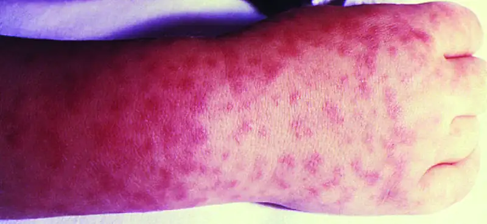
Lyme Disease¶
Lyme disease is caused by the spirochete Borrelia burgdorferi that is transmitted by the bite of a hard-bodied, black-legged Ixodes tick. I. scapularis is the biological vector transmitting B. burgdorferi in the eastern and north-central US and I. pacificus transmits B. burgdorferi in the western US (Figure 25.15). Different species of Ixodes ticks are responsible for B. burgdorferi transmission in Asia and Europe. In the US, Lyme disease is the most commonly reported vectorborne illness. In 2014, it was the fifth most common Nationally Notifiable disease.24
Ixodes ticks have complex life cycles and deer, mice, and even birds can act as reservoirs. Over 2 years, the ticks pass through four developmental stages and require a blood meal from a host at each stage. In the spring, tick eggs hatch into six-legged larvae. These larvae do not carry B. burgdorferi initially. They may acquire the spirochete when they take their first blood meal (typically from a mouse). The larvae then overwinter and molt into eight-legged nymphs in the following spring. Nymphs take blood meals primarily from small rodents, but may also feed on humans, burrowing into the skin. The feeding period can last several days to a week, and it typically takes 24 hours for an infected nymph to transmit enough B. burgdorferi to cause infection in a human host. Nymphs ultimately mature into male and female adult ticks, which tend to feed on larger animals like deer or, occasionally, humans. The adults then mate and produce eggs to continue the cycle (Figure 25.14).
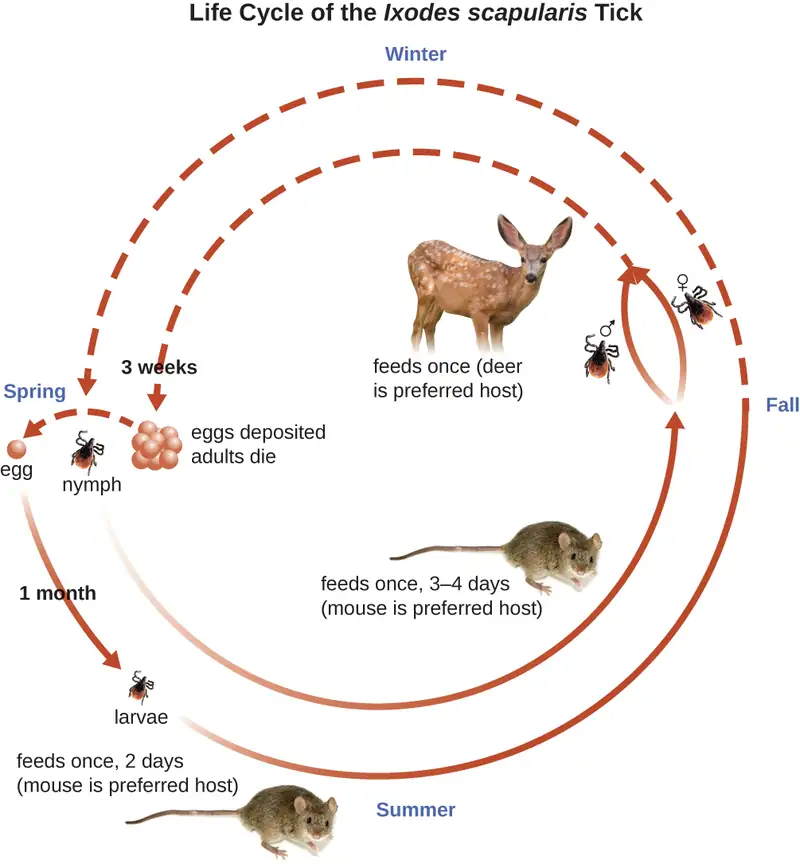
The symptoms of Lyme disease follow three stages: early localized, early disseminated, and late stage. During the early-localized stage, approximately 70%–80%25 of cases may be characterized by a bull's-eye rash, called erythema migrans, at the site of the initial tick bite. The rash forms 3 to 30 days after the tick bite (7 days is the average) and may also be warm to the touch (Figure 25.15).26 This diagnostic sign is often overlooked if the tick bite occurs on the scalp or another less visible location. Other early symptoms include flu-like symptoms such as malaise, headache, fever, and muscle stiffness. If the patient goes untreated, the second early-disseminated stage of the disease occurs days to weeks later. The symptoms at this stage may include severe headache, neck stiffness, facial paralysis, arthritis, and carditis. The late-stage manifestations of the disease may occur years after exposure. Chronic inflammation causes damage that can eventually cause severe arthritis, meningitis, encephalitis, and altered mental states. The disease may be fatal if untreated.
A presumptive diagnosis of Lyme disease can be made based solely on the presence of a bull’s-eye rash at the site of infection, if it is present, in addition to other associated symptoms (Figure 25.15). In addition, indirect immunofluorescent antibody (IFA) labeling can be used to visualize bacteria from blood or skin biopsy specimens. Serological tests like ELISA can also be used to detect serum antibodies produced in response to infection. During the early stage of infection (about 30 days), antibacterial drugs such as amoxicillin and doxycycline are effective. In the later stages, penicillin G, chloramphenicol, or ceftriaxone can be given intravenously.
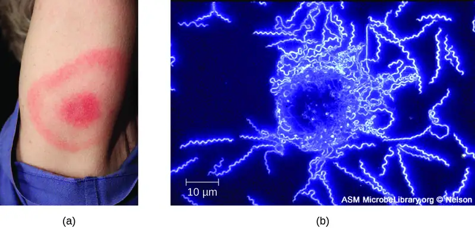
Relapsing Fever¶
Borrelia spp. also can cause relapsing fever. Two of the most common species are B. recurrentis, which causes epidemics of louseborne relapsing fever, and B. hermsii, which causes tickborne relapsing fevers. These Borrelia species are transmitted by the body louse Pediculus humanus and the soft-bodied tick Ornithodoros hermsi, respectively. Lice acquire the spirochetes from human reservoirs, whereas ticks acquire them from rodent reservoirs. Spirochetes infect humans when Borrelia in the vector’s saliva or excreta enter the skin rapidly as the vector bites.
In both louse- and tickborne relapsing fevers, bacteremia usually occurs after the initial exposure, leading to a sudden high fever (39–43 °C [102.2–109.4 °F) typically accompanied by headache and muscle aches. After about 3 days, these symptoms typically subside, only to return again after about a week. After another 3 days, the symptoms subside again but return a week later, and this cycle may repeat several times unless it is disrupted by antibiotic treatment. Immune evasion through bacterial antigenic variation is responsible for the cyclical nature of the symptoms in these diseases.
The diagnosis of relapsing fever can be made by observation of spirochetes in blood, using darkfield microscopy (Figure 25.16). For louseborne relapsing fever, doxycycline or erythromycin are the first-line antibiotics. For tickborne relapsing fever, tetracycline or erythromycin are the first-line antibiotics.
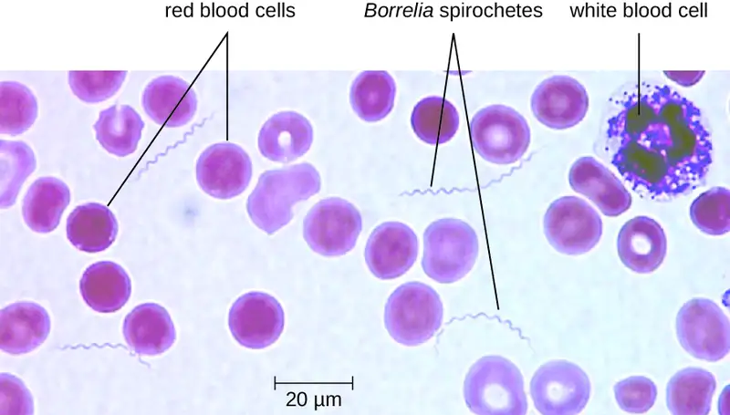
Trench Fever¶
The louseborne disease trench fever was first characterized as a specific disease during World War I, when approximately 1 million soldiers were infected. Today, it is primarily limited to areas of the developing world where poor sanitation and hygiene lead to infestations of lice (e.g., overpopulated urban areas and refugee camps). Trench fever is caused by the gram-negative bacterium Bartonella quintana, which is transmitted when feces from infected body lice, Pediculus humanus var corporis, are rubbed into the louse bite, abraded skin, or the conjunctiva. The symptoms typically follow a 5-day course marked by a high fever, body aches, conjunctivitis, ocular pain, severe headaches, and severe bone pain in the shins, neck, and back. Diagnosis can be made using blood cultures; serological tests like ELISA can be used to detect antibody titers to the pathogen and PCR can also be used. The first-line antibiotics are doxycycline, macrolide antibiotics, and ceftriaxone.
Check Your Understanding
- What is the vector associated with epidemic typhus?
- Describe the life cycle of the deer tick and how it spreads Lyme disease.
Micro Connections: Tick Tips
Many of the diseases covered in this chapter involve arthropod vectors. Of these, ticks are probably the most commonly encountered in the US. Adult ticks have eight legs and two body segments, the cephalothorax and the head (Figure 25.17). They typically range from 2 mm to 4 mm in length, and feed on the blood of the host by attaching themselves to the skin.
Unattached ticks should be removed and eliminated as soon as they are discovered. When removing a tick that has already attached itself, keep the following guidelines in mind to reduce the chances of exposure to pathogens:
- Use blunt tweezers to gently pull near the site of attachment until the tick releases its hold on the skin.
- Avoid crushing the tick's body and do not handle the tick with bare fingers. This could release bacterial pathogens and actually increase your exposure. The tick can be killed by drowning in water or alcohol, or frozen if it may be needed later for identification and analysis.
- Disinfect the area thoroughly by swabbing with an antiseptic such as isopropanol.
- Monitor the site of the bite for rashes or other signs of infection.
Many ill-advised home remedies for tick removal have become popular in recent years, propagated by social media and pseudojournalism. Health professionals should discourage patients from resorting to any of the following methods, which are NOT recommended:
- using chemicals (e.g., petroleum jelly or fingernail polish) to dislodge an attached tick, because it can cause the tick to release fluid, which can increase the chance of infection
- using hot objects (matches or cigarette butts) to dislodge an attached tick
- squeezing the tick's body with fingers or tweezers
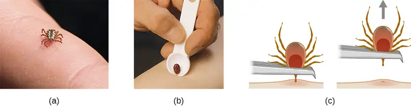
Disease Profile: Bacterial Infections of the Circulatory and Lymphatic Systems
Although the circulatory system is a closed system, bacteria can enter the bloodstream through several routes. Wounds, animal bites, or other breaks in the skin and mucous membranes can result in the rapid dissemination of bacterial pathogens throughout the body. Localized infections may also spread to the bloodstream, causing serious and often fatal systemic infections. Figure 25.18 and Figure 25.19 summarize the major characteristics of bacterial infections of the circulatory and lymphatic systems.
![Table titled: Bacterial Infections of the Circulatory and Lymphatic Systems. Columns: Disease, Pathogen, Signs and Symptoms, Transmission, Diagnostic Tests, Antimicrobial Drugs. Anaplasmosis (HGA); Anaplasma phagocytophilum; Fever, flu-like symptoms; From small-mammal reservoirs via tick vector; Blood smear, PCR; Doxycycline. Brucellosis; Brucella melitensis, B. abortus, B. canis, B. suis; Granuloma, undulating fever, chronic flu-like symptoms; Direct contact with infected livestock or animals; Agglutination tests, ELISA; Doxycycline, rifampin. Cat-scratch disease; Bartonella henselae; Lymph-node swelling and pain, fever, chills, fatigue; Bite or scratch from domestic cats; Immunofluorescence, serological tests, PCR; None for immunocompetent patients. Ehrlichiosis (HME); Ehrlichia chaffeensis;Flu-like symptoms, rash; Lone star tick vector; Serologic tests, PCR; Doxycycline. Endocarditis/pericarditis; Staphylococcus spp., Streptococcus spp., Enterococcus spp., HACEK bacilli; Chest pain, difficulty breathing, dry cough, fever; potentially fatal damage to heart valves; Pathogens introduced to bloodstream via contaminated catheters, dental procedures, piercings, or wounds; Echocardiogram, blood culture; Ampicillin, nafcillin, gentamicin, others; based on susceptibility testing. Epidemic typhus; Rickettsia prowazekii; High fever, body aches, rash; potentially fatal damage to heart and brain; From rodent reservoir via body louse vector; PCR, immunofluorescence; Doxycycline, chloramphenicol. Gas gangrene; Clostridium perfringens, other Clostridium spp.; Rapidly spreading myonecrosis, edema, yellowish and then purple discharge from wound, pockets of gas in tissues, septic shock and death; Germination of endospores in ischemic tissues, typically due to injury or chronic disease (e.g., diabetes); Wound culture; Penicillin G, clindamycin, metronidazole. Infectious arthritis (septic arthritis); Staphylococcus aureus, Neisseria gonorrhoeae; Joint pain and swelling, limited range of motion; Infection spreads to joint via circulatory system from wound or surgical site; Synovial fluid culture; Oxacillin, cefazolin, cephtriaxone. Lyme disease; Borrelia burgdorferi; Early localized: bull’s eye rash, malaise, headache, fever, muscle stiffness; early disseminated: stiff neck, facial paralysis, arthritis, carditis; late-stage: arthritis, meningitis, possibly fatal; From deer, rodent, bird reservoirs via tick vector; IFA, serology, and ELISA; Amoxicillin, doxycycline, penicillin G, chloramphenicol, ceftriaxone. Murine (endemic) typhus; Rickettsia typhi; Low-grade fever, rash, headache, cough; From rodents or between humans via rat flea vector; Biopsy, IFA, PCR; Doxycycline, chloramphenicol. Osteomyelitis; Staphylococcus aureus, Streptococcus pyogenes, others; Inflammation of bone tissue, leading to fever, localized pain, edema, ulcers, bone loss; Pathogens introduced through trauma, prosthetic joint replacement, or from other infected body site via bloodstream; Radiograph of affected bone, culture of bone biopsy specimen; Cephalosporin, penicillins, others.](img/osc-microbio-25-02-bactcircdp-part1.webp)
![Table titled: Bacterial Infections of the Circulatory and Lymphatic Systems (continued). Columns: Disease, Pathogen, Signs and Symptoms, Transmission, Diagnostic Tests, Antimicrobial Drugs.Plague; Yersinia pestis; Bubonic: buboes, fever, internal hemorrhaging; septicemic: fever, abdominal pain, shock, DIC, necrosis in extremities; pneumonic: acute pneumonia, respiratory failure, shock. All forms have high mortality rates. Transmitted from mammal reservoirs via flea vectors or consumption of infected animal; transmission of pneumonic plague between humans via respiratory aerosols; Culture of bacteria from lymph, blood, or sputum samples; DFA, ELISA; Gentamycin, fluoroquinolones, others. Puerperal sepsis; Streptococcus pyogenes, many others; Rapid-onset fever, shock, and death; Pathogens introduced during or immediately following childbirth; Wound, urine, or blood culture; As determined by susceptibility testing. Rat-bite fever; Streptobacillus moniliformis, Spirillum minor; Fever, muscle and joint pain, rash, ulcer; Bite from infected rat or exposure to rat feces or body fluids in contaminated food or water; Observation of the organism from samples and antibody tests; Penicillin. Relapsing fever; Borrelia recurrentis, B. hermsii, other Borrelia spp.; Recurring fever, headache, muscle aches; From rodent or human reservoir via body louse or tick vector; Darkfield microscopy; Doxycycline, tetracycline, erythromycin. Rheumatic fever; Streptococcus pyogenes; Joint pain and swelling, inflammation and scarring of heart valves, heart murmur; Sequela of streptococcal pharyngitis; Serology, electrocardiogram, echocardiogram; Benzathine benzylpenicillin. Rocky Mountain spotted fever; Rickettsia rickettsia; High fever, headache, body aches, nausea and vomiting, petechial rash; potentially fatal hypotension and ischemia due to blood coagulation; From rodent reservoir via tick vectors; Biopsy, serology, PCR; Doxycycline, chloramphenicol. Toxic shock syndrome (TSS); Staphylococcus aureus; Sudden high fever, vomiting, diarrhea, hypotension, deathPathogens from localized infection spread to bloodstream; pathogens introduced on tampons or other intravaginal products; Serology, toxin identification from isolates; Clindamycin, vancomycin. Toxic shock-like syndrome (STSS); Streptococcus pyogenes; Sudden high fever, vomiting, diarrhea, acute respiratory distress syndrome (ARDS), hypoxemia, necrotizing fasciitis, death; Sequela of streptococcal skin or soft-tissue infection; (MISSING); Penicillin, cephalosporin. Trench fever; Bartonella Quintana; High fever, conjunctivitis, ocular pain, headaches, severe pain in bones of shins, neck, and back; Between humans via body louse vector; Blood culture, ELISA, PCR; Doxycycline, macrolide antibiotics, ceftriaxone. Tularemia (rabbit fever); Francisella tularensis Skin lesions, fever, chills, headache, buboes; Eating or handling infected rabbit; transmission from infected animal via tick or fly vector; aerosol transmission (in laboratory or as bioweapon); DFA; Streptomycin, gentamycin, others.](img/osc-microbio-25-02-bactcircdp-part2.webp)
25.3 Viral Infections of the Circulatory and Lymphatic Systems¶
Learning Objectives
By the end of this section, you will be able to:
- Identify common viral pathogens that cause infections of the circulatory and lymphatic systems
- Compare the major characteristics of specific viral diseases affecting the circulatory and lymphatic systems
Viral pathogens of the circulatory system vary tremendously both in their virulence and distribution worldwide. Some of these pathogens are practically global in their distribution. Fortunately, the most ubiquitous viruses tend to produce the mildest forms of disease. In the majority of cases, those infected remain asymptomatic. On the other hand, other viruses are associated with life-threatening diseases that have impacted human history.
Infectious Mononucleosis and Burkitt Lymphoma¶
Human herpesvirus 4, also known as Epstein-Barr virus (EBV), has been associated with a variety of human diseases, such as mononucleosis and Burkitt lymphoma. Exposure to the human herpesvirus 4 (HHV-4) is widespread and nearly all people have been exposed at some time in their childhood, as evidenced by serological tests on populations. The virus primarily resides within B lymphocytes and, like all herpes viruses, can remain dormant in a latent state for a long time.
When uninfected young adults are exposed to EBV, they may experience infectious mononucleosis. The virus is mainly spread through contact with body fluids (e.g., saliva, blood, and semen). The main symptoms include pharyngitis, fever, fatigue, and lymph node swelling. Abdominal pain may also occur as a result of spleen and liver enlargement in the second or third week of infection. The disease typically is self-limiting after about a month. The main symptom, extreme fatigue, can continue for several months, however. Complications in immunocompetent patients are rare but can include jaundice, anemia, and possible rupture of the spleen caused by enlargement.
In patients with malaria or HIV, Epstein-Barr virus can lead to a fast-growing malignant cancer known as Burkitt lymphoma (Figure 25.20). This condition is a form of non-Hodgkin lymphoma that produces solid tumors chiefly consisting of aberrant B cells. Burkitt lymphoma is more common in Africa, where prevalence of HIV and malaria is high, and it more frequently afflicts children. Repeated episodes of viremia caused by reactivation of the virus are common in immunocompromised individuals. In some patients with AIDS, EBV may induce the formation of malignant B-cell lymphomas or oral hairy leukoplakia. Immunodeficiency-associated Burkitt lymphoma primarily occurs in patients with HIV. HIV infection, similar to malaria, leads to polyclonal B-cell activation and permits poorly controlled proliferation of EBV+ B cells, leading to the formation of lymphomas.
Infectious mononucleosis is typically diagnosed based on the initial clinical symptoms and a test for antibodies to EBV-associated antigens. Because the disease is self-limiting, antiviral treatments are rare for mononucleosis. Cases of Burkitt lymphoma are diagnosed from a biopsy specimen from a lymph node or tissue from a suspected tumor. Staging of the cancer includes computed tomography (CT) scans of the chest, abdomen, pelvis, and cytologic and histologic evaluation of biopsy specimens. Because the tumors grow so rapidly, staging studies must be expedited and treatment must be initiated promptly. An intensive alternating regimen of cyclophosphamide, vincristine, doxorubicin, methotrexate, ifosfamide, etoposide, and cytarabine (CODOX-M/IVAC) plus rituximab results in a cure rate greater than 90% for children and adults.
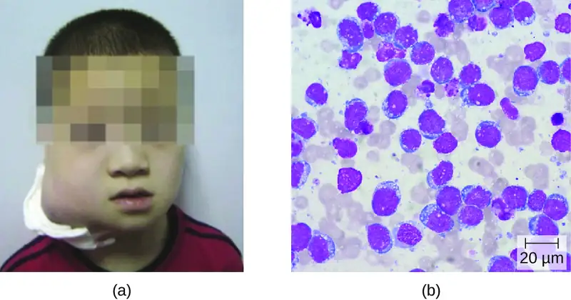
Cytomegalovirus Infections¶
Also known as cytomegalovirus (CMV), human herpesvirus 5 (HHV-5) is a virus with high infection rates in the human population. It is currently estimated that 50% of people in the US have been infected by the time they reach adulthood.27 CMV is the major cause of non-Epstein-Barr infectious mononucleosis in the general human population. It is also an important pathogen in immunocompromised hosts, including patients with AIDS, neonates, and transplant recipients. However, the vast majority of CMV infections are asymptomatic. In adults, if symptoms do occur, they typically include fever, fatigue, swollen glands, and pharyngitis.
CMV can be transmitted between individuals through contact with body fluids such as saliva or urine. Common modes of transmission include sexual contact, nursing, blood transfusions, and organ transplants. In addition, pregnant people with active infections frequently pass this virus to their fetus, resulting in congenital CMV infections, which occur in approximately one in every 150 infants in US.28 Infants can also be infected during passage through the birth canal or through breast milk and saliva.
Perinatal infections tend to be milder but can occasionally cause lung, spleen, or liver damage. Serious symptoms in newborns include growth retardation, jaundice, deafness, blindness, and mental retardation if the virus crosses the placenta during the embryonic state when the body systems are developing in utero. However, a majority (approximately 80%) of infected infants will never have symptoms or experience long-term problems.29 Diagnosis of CMV infection during pregnancy is usually achieved by serology; CMV is the “C” in prenatal TORCH screening.
Many patients receiving blood transfusions and nearly all those receiving kidney transplants ultimately become infected with CMV. Approximately 60% of transplant recipients will have CMV infection and more than 20% will develop symptomatic disease.30 These infections may result from CMV-contaminated tissues but also may be a consequence of immunosuppression required for transplantation causing reactivation of prior CMV infections. The resulting viremia can lead to fever and leukopenia, a decrease in the number of white blood cells in the bloodstream. Serious consequences may include liver damage, transplant rejection, and death. For similar reasons, many patients with AIDS develop active CMV infections that can manifest as encephalitis or progressive retinitis leading to blindness.31
Diagnosis of a localized CMV infection can be achieved through direct microscopic evaluation of tissue specimens stained with routine stains (e.g., Wright-Giemsa, hematoxylin and eosin, Papanicolaou) and immunohistochemical stains. Cells infected by CMV produce characteristic inclusions with an "owl's eye" appearance; this sign is less sensitive than molecular methods like PCR but more predictive of localized disease (Figure 25.21). For more severe CMV infection, tests such as enzyme immunoassay (EIA), indirect immunofluorescence antibody (IFA) tests, and PCR, which are based on detection of CMV antigen or DNA, have a higher sensitivity and can determine viral load. Cultivation of the virus from saliva or urine is still the method for detecting CMV in newborn babies up to 3 weeks old. Ganciclovir, valganciclovir, foscarnet, and cidofovir are the first-line antiviral drugs for serious CMV infections.
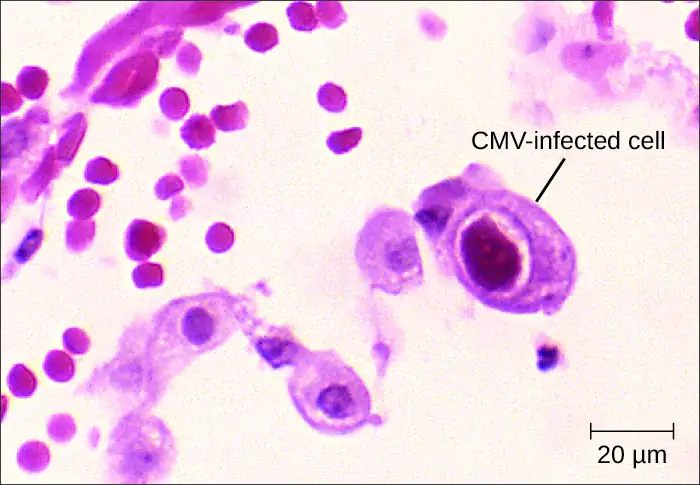
Check Your Understanding
- Compare the diseases caused by HHV-4 and HHV-5.
Arthropod-Borne Viral Diseases¶
There are a number of arthropod-borne viruses, or arboviruses, that can cause human disease. Among these are several important hemorrhagic fevers transmitted by mosquitoes. We will discuss three that pose serious threats: yellow fever, chikungunya fever, and dengue fever.
Yellow Fever¶
Yellow fever was once common in the US and caused several serious outbreaks between 1700 and 1900.32 Through vector control efforts, however, this disease has been eliminated in the US. Currently, yellow fever occurs primarily in tropical and subtropical areas in South America and Africa. It is caused by the yellow fever virus of the genus Flavivirus (named for the Latin word flavus meaning yellow), which is transmitted to humans by mosquito vectors. Sylvatic yellow fever occurs in tropical jungle regions of Africa and Central and South America, where the virus can be transmitted from infected monkeys to humans by the mosquitoes Aedes africanus or Haemagogus spp. In urban areas, the Aedes aegypti mosquito is mostly responsible for transmitting the virus between humans.
Most individuals infected with yellow fever virus have no illness or only mild disease. Onset of milder symptoms is sudden, with dizziness, fever of 39–40 °C (102–104 °F), chills, headache, and myalgias. As symptoms worsen, the face becomes flushed, and nausea, vomiting, constipation, severe fatigue, restlessness, and irritability are common. Mild disease may resolve after 1 to 3 days. However, approximately 15% of cases progress to develop moderate to severe yellow fever disease.33
In moderate or severe disease, the fever falls suddenly 2 to 5 days after onset, but recurs several hours or days later. Symptoms of jaundice, petechial rash, mucosal hemorrhages, oliguria (scant urine), epigastric tenderness with bloody vomit, confusion, and apathy also often occur for approximately 7 days of moderate to severe disease. After more than a week, patients may have a rapid recovery and no sequelae.
In its most severe form, called malignant yellow fever, symptoms include delirium, bleeding, seizures, shock, coma, and multiple organ failure; in some cases, death occurs. Patients with malignant yellow fever also become severely immunocompromised, and even those in recovery may become susceptible to bacterial superinfections and pneumonia. Of the 15% of patients who develop moderate or severe disease, up to half may die.
Diagnosis of yellow fever is often based on clinical signs and symptoms and, if applicable, the patient’s travel history, but infection can be confirmed by culture, serologic tests, and PCR. There are no effective treatments for patients with yellow fever. Whenever possible, patients with yellow fever should be hospitalized for close observation and given supportive care. Prevention is the best method of controlling yellow fever. Use of mosquito netting, window screens, insect repellents, and insecticides are all effective methods of reducing exposure to mosquito vectors. An effective vaccine is also available, but in the US, it is only administered to those traveling to areas with endemic yellow fever. In West Africa, the World Health Organization (WHO) launched a Yellow Fever Initiative in 2006 and, since that time, significant progress has been made in combating yellow fever. More than 105 million people have been vaccinated, and no outbreaks of yellow fever were reported in West Africa in 2015.
Micro Connections: Yellow Fever: Altering the Course of History
Yellow fever originated in Africa and is still most prevalent there today. This disease is thought to have been translocated to the Americas by the slave trade in the 16th century.34 Since that time, yellow fever has been associated with many severe outbreaks, some of which had important impacts upon historic events.
Yellow fever virus was once an important cause of disease in the US. In the summer of 1793, there was a serious outbreak in Philadelphia (then the US capitol). It is estimated that 5,000 people (10% of the city’s population) died. All of the government officials, including George Washington, fled the city in the face of this epidemic. The disease only abated when autumn frosts killed the mosquito vector population.
In 1802, Napoleon Bonaparte sent an army of 40,000 to Hispaniola to suppress a slave revolution. This was seen by many as a part of a plan to use the Louisiana Territory as a granary as he reestablished France as a global power. Yellow fever, however, decimated his army and they were forced to withdraw. Abandoning his aspirations in the New World, Napoleon sold the Louisiana Territory to the US for $15 million in 1803.
The most famous historic event associated with yellow fever is probably the construction of the Panama Canal. The French began work on the canal in the early 1880s. However, engineering problems, malaria, and yellow fever forced them to abandon the project. The US took over the task in 1904 and opened the canal a decade later. During those 10 years, yellow fever was a constant adversary. In the first few years of work, greater than 80% of the American workers in Panama were hospitalized with yellow fever. It was the work of Carlos Finlay and Walter Reed that turned the tide. Taken together, their work demonstrated that the disease was transmitted by mosquitoes. Vector control measures succeeded in reducing both yellow fever and malaria rates and contributed to the ultimate success of the project.
Dengue Fever¶
The disease dengue fever, also known as breakbone fever, is caused by four serotypes of dengue virus called dengue 1–4. These are Flavivirus species that are transmitted to humans by A. aegypti or A. albopictus mosquitoes. The disease is distributed worldwide but is predominantly located in tropical regions. The WHO estimates that 50 million to 100 million infections occur yearly, including 500,000 dengue hemorrhagic fever (DHF) cases and 22,000 deaths, most among children.35 Dengue fever is primarily a self-limiting disease characterized by abrupt onset of high fever up to 40 °C (104 °F), intense headaches, rash, slight nose or gum bleeding, and extreme muscle, joint, and bone pain, causing patients to feel as if their bones are breaking, which is the reason this disease is also referred to as breakbone fever. As the body temperature returns to normal, in some patients, signs of dengue hemorrhagic fever may develop that include drowsiness, irritability, severe abdominal pain, severe nose or gum bleeding, persistent vomiting, vomiting blood, and black tarry stools, as the disease progresses to DHF or dengue shock syndrome (DSS). Patients who develop DHF experience circulatory system failure caused by increased blood vessel permeability. Patients with dengue fever can also develop DSS from vascular collapse because of the severe drop in blood pressure. Patients who develop DHF or DSS are at greater risk for death without prompt appropriate supportive treatment. About 30% of patients with severe hemorrhagic disease with poor supportive treatment die, but mortality can be less than 1% with experienced support.36
Diagnostic tests for dengue fever include serologic testing, ELISA, and reverse transcriptase-polymerase chain reaction (RT-PCR) of blood. There are no specific treatments for dengue fever, nor is there a vaccine. Instead, supportive clinical care is provided to treat the symptoms of the disease. The best way to limit the impact of this viral pathogen is vector control.
Chikungunya Fever¶
The arboviral disease chikungunya fever is caused by chikungunya virus (CHIKV), which is transmitted to humans by A. aegypti and A. albopictus mosquitoes. Until 2013, the disease had not been reported outside of Africa, Asia, and a few European countries; however, CHIKV has now spread to mosquito populations in North and South America. Chikungunya fever is characterized by high fever, joint pain, rash, and blisters, with joint pain persisting for several months. These infections are typically self-limiting and rarely fatal.
The diagnostic approach for chikungunya fever is similar to that for dengue fever. Viruses can be cultured directly from patient serum during early infections. IFA, EIA, ELISA, PCR, and RT-PCR are available to detect CHIKV antigens and patient antibody response to the infection. There are no specific treatments for this disease except to manage symptoms with fluids, analgesics, and bed rest. As with most arboviruses, the best strategy for combating the disease is vector control.
Link to Learning
Use this interactive map to explore the global distribution of dengue.
Check Your Understanding
- Name three arboviral diseases and explain why they are so named.
- What is the best method for controlling outbreaks of arboviral diseases?
Ebola Virus Disease¶
The Ebola virus disease (EVD) is a highly contagious disease caused by species of Ebolavirus, a BSL-4 filovirus (Figure 25.22). Transmission to humans occurs through direct contact with body fluids (e.g., blood, saliva, sweat, urine, feces, or vomit), and indirect contact by contaminated fomites. Infected patients can easily transmit Ebola virus to others if appropriate containment and use of personal protective equipment is not available or used. Handling and working with patients with EVD is extremely hazardous to the general population and health-care workers. In almost every EVD outbreak there have been Ebola infections among health-care workers. This ease of Ebola virus transmission was recently demonstrated in the Ebola epidemic in Guinea, Liberia, and Sierra Leone in 2014, in which more than 28,000 people in 10 countries were infected and more than 11,000 died.37
After infection, the initial symptoms of Ebola are unremarkable: fever, severe headache, myalgia, cough, chest pain, and pharyngitis. As the disease progresses, patients experience abdominal pain, diarrhea, and vomiting. Hemorrhaging begins after about 3 days, with bleeding occurring in the gastrointestinal tract, skin, and many other sites. This often leads to delirium, stupor, and coma, accompanied by shock, multiple organ failure, and death. The mortality rates of EVD often range from 50% to 90%.
The initial diagnosis of Ebola is difficult because the early symptoms are so similar to those of many other illnesses. It is possible to directly detect the virus from patient samples within a few days after symptoms begin, using antigen-capture ELISA, immunoglobulin M (IgM) ELISA, PCR, and virus isolation. There are currently no effective, approved treatments for Ebola other than supportive care and proper isolation techniques to contain its spread.
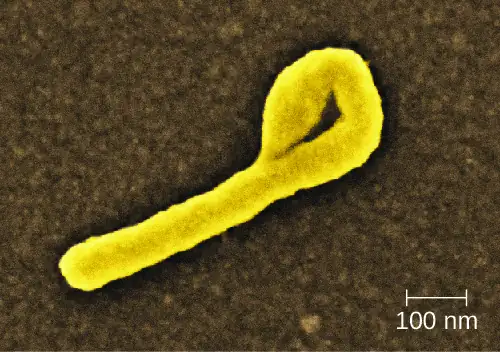
Check Your Understanding
- How is Ebola transmitted?
Hantavirus¶
The genus Hantavirus consists of at least four serogroups with nine viruses causing two major clinical (sometimes overlapping) syndromes: hantavirus pulmonary syndrome (HPS) in North America and hemorrhagic fever with renal syndrome (HFRS) in other continents. Hantaviruses are found throughout the world in wild rodents that shed the virus in their urine and feces. Transmission occurs between rodents and to humans through inhalation of aerosols of the rodent urine and feces. Hantaviruses associated with outbreaks in the US and Canada are transmitted by the deer mouse, white-footed mouse, or cotton rat.
HPS begins as a nonspecific flu-like illness with headache, fever, myalgia, nausea, vomiting, diarrhea, and abdominal pain. Patients rapidly develop pulmonary edema and hypotension resulting in pneumonia, shock, and death, with a mortality rate of up to 50%.38 This virus can also cause HFRS, which has not been reported in the US. The initial symptoms of this condition include high fever, headache, chills, nausea, inflammation or redness of the eyes, or a rash. Later symptoms are hemorrhaging, hypotension, kidney failure, shock, and death. The mortality rate of HFRS can be as high as 15%.39
ELISA, Western blot, rapid immunoblot strip assay (RIBA), and RT-PCR detect host antibodies or viral proteins produced during infection. Immunohistological staining may also be used to detect the presence of viral antigens. There are no clinical treatments other than general supportive care available for HPS infections. Patients with HFRS can be treated with ribavirin.40
Check Your Understanding
- Compare the two Hantavirus diseases discussed in this section.
Human Immunodeficiency Virus¶
Human T-lymphotropic viruses (HTLV), also called human immunodeficiency viruses (HIV) are retroviruses that are the causative agent of acquired immune deficiency syndrome (AIDS). There are two main variants of human immunodeficiency virus (HIV). HIV-1 (Figure 25.23) occurs in human populations worldwide, whereas HIV-2 is concentrated in West Africa. Currently, the most affected region in the world is sub-Saharan Africa, with an estimated 25.6 million people living with HIV in 2015.41 Sub-Saharan Africa also accounts for two-thirds of the global total of new HIV infections (Figure 25.24).42
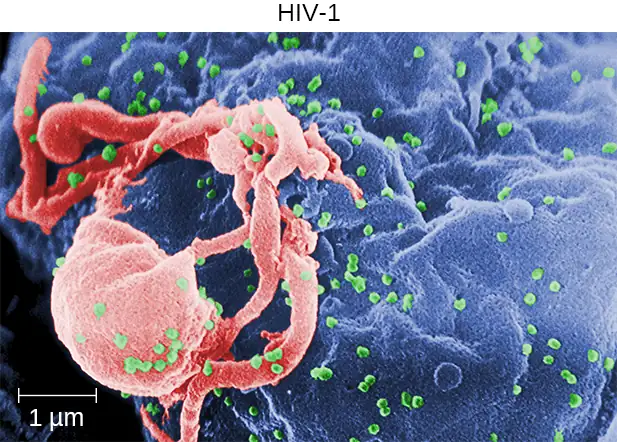
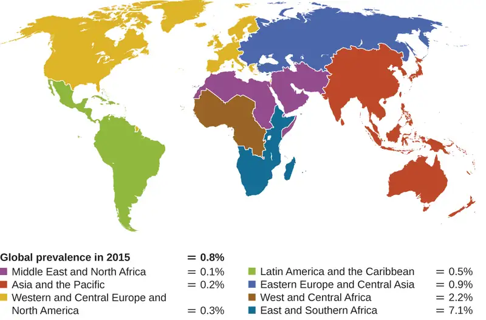
HIV is spread through direct contact with body fluids. Casual contact and insect vectors are not sufficient for disease transmission; common modes of transmission include sexual contact and sharing of needles by intravenous (IV) drug users. It generally takes many years before the effects of an HIV infection are detected. HIV infections are not dormant during this period: virions are continually produced, and the immune system continually attempts to clear the viral infection, while the virus persistently infects additional CD4 T cells. Over time, the CD4 T-cell population is devastated, ultimately leading to AIDS.
When people are infected with HIV, their disease progresses through three stages based on CD4 T-cell counts and the presence of clinical symptoms (Figure 25.25).
- Stage 1: Acute HIV infection. Two to 4 weeks after infection with HIV, patients may experience a flu-like illness, which can last for a few weeks. Patients with acute HIV infection have more than 500 cells/μL CD4 T cells and a large amount of virus in their blood. Patients are very contagious during this stage. To confirm acute infection, either a fourth-generation antibody-antigen test or a nucleic acid test (NAT) must be performed.
- Stage 2: Clinical latency. During this period, HIV enters a period of dormancy. Patients have between 200 and 499 cells/μL CD4 T cells; HIV is still active but reproduces at low levels, and patients may not experience any symptoms of illness. For patients who are not taking medicine to treat HIV, this period can last a decade or longer. For patients receiving antiretroviral therapy, the stage may last for several decades, and those with low levels of the virus in their blood are much less likely to transmit HIV than those who are not virally suppressed. Near the end of the latent stage, the patient’s viral load starts to increase and the CD4 T-cell count begins to decrease, leading to the development of symptoms and increased susceptibility to opportunistic infections.
- Stage 3: Acquired immunodeficiency syndrome (AIDS). Patients are diagnosed with AIDS when their CD4 T-cell count drops below 200 cells/μL or when they develop certain opportunistic illnesses. During this stage, the immune system becomes severely damaged by HIV. Common symptoms of AIDS include chills, fever, sweats, swollen lymph glands, weakness, and weight loss; in addition, patients often develop rare cancers such as Kaposi’s sarcoma and opportunistic infections such as Pneumocystis pneumonia, tuberculosis, cryptosporidiosis, and toxoplasmosis. This is a fatal progression that, in the terminal stages, includes wasting syndrome and dementia complex. Patients with AIDS have a high viral load and are highly infectious; they typically survive about 3 years without treatment.
![A graph with time on the X axis and two Y axes – CD4+ T lymphocyte count (cells/mm cubed) and HIV RNA copies per ml plasma. The primary infection is set at time 0 when there is a high CD4 count (over 1000) and a low RNA count (near 0). During the first weeks - macrophage infection, increase in virus production and HIV-1 reservoirs. At about 6 weeks – acute HIV syndrome, wide dissemination of virus, seeding of lymphoid organs. During this time the RNA count increases to about 10 to the 6 and the CD4 count decreases to about 500. From 9 weeks to about 12 weeks the CD4 count increases and the RNA count decreases. From 9 weeks to about 7 years is classic latency – T-cell depletion/immune dysfunction and neurocognitive impairment. During this time CD4 count steadily decreases to near 0 and RNA count steadily increases to over 10 to the 6. Constitutional symptoms occur at about 8 years. After this, opportunistic diseases occur; HIV-D and HIVAN. Then death.](img/osc-microbio-25-03-aids.webp)
The initial diagnosis of HIV is performed using a serological test for antibody production against the pathogen. Positive test results are confirmed by Western blot or PCR tests. It can take weeks or months for the body to produce antibodies in response to an infection. There are fourth-generation tests that detect HIV antibodies and HIV antigens that are present even before the body begins producing antibodies. Nucleic acid tests (NATs) are a third type of test that is relatively expensive and uncommon; NAT can detect HIV in blood and determine the viral load.
As a consequence of provirus formation, it is currently not possible to eliminate HIV from an infected patient’s body. Elimination by specific antibodies is ineffective because the virus mutates rapidly—a result of the error-prone reverse transcriptase and the inability to correct errors. Antiviral treatments, however, can greatly extend life expectancy. To combat the problem of drug resistance, combinations of antiretroviral drugs called antiretroviral therapy (ART), sometimes called highly active ART or combined ART, are used. There are several different targets for antiviral drug action (and a growing list of drugs for each of these targets). One class of drugs inhibits HIV entry; other classes inhibit reverse transcriptase by blocking viral RNA-dependent and DNA-dependent DNA polymerase activity; and still others inhibit one of the three HIV enzymes needed to replicate inside human cells.
Check Your Understanding
- Why is it not yet possible to cure HIV infections?
Eye on Ethics: HIV, AIDS, and Education
When the first outbreaks of AIDS in the US occurred in the early 1980s, very little was known about the disease or its origins. Erroneously, the disease quickly became stigmatized as one associated with what became identified as at-risk behaviors such as sexual promiscuity, homosexuality, and IV drug use, even though mounting evidence indicated the disease was also contracted through transfusion of blood and blood products or by fetuses of infected people. In the mid-1980s, scientists elucidated the identity of the virus, its mode of transmission, and mechanisms of pathogenesis. Campaigns were undertaken to educate the public about how HIV spreads to stem infection rates and encourage behavioral changes that reduced the risk for infection. Approaches to this campaign, however, emphasized very different strategies. Some groups favored educational programs that emphasized sexual abstinence, monogamy, heterosexuality, and “just say no to drugs.” Other groups placed an emphasis on “safe sex” in sex education programs and advocated social services programs that passed out free condoms to anyone, including sexually active minors, and provided needle exchange programs for IV drug users.
These are clear examples of the intersection between disease and cultural values. As a future health professional, what is your responsibility in terms of educating patients about behaviors that put them at risk for HIV or other diseases while possibly setting your own personal opinions aside? You will no doubt encounter patients whose cultural and moral values differ from your own. Is it ethical for you to promote your own moral agenda to your patients? How can you advocate for practical disease prevention while still respecting the personal views of your patients?
Disease Profile: Viral Diseases of the Circulatory and Lymphatic Systems
Many viruses are able to cause systemic, difficult-to-treat infections because of their ability to replicate within the host. Some of the more common viruses that affect the circulatory system are summarized in Figure 25.26.
![Table titled: Viral Diseases of the Circulatory and Lymphatic Systems. Columns: Disease, Pathogen, Signs and Symptoms, Transmission, Diagnostic Tests, Antimicrobial Drugs. AIDS/HIV infection; Human immunodeficiency virus (HIV); Flu-like symptoms during acute stage, followed by long period of clinical latency; final stage (AIDS) includes fever, weight loss, wasting syndrome, dementia, and opportunistic secondary infections leading to death; Contact with body fluids (e.g., sexual contact, use of contaminated needles); Serological tests for antibodies and/or HIV antigens; nucleic acid test (NAT) for presence of virus; Antiretroviral therapy (ART) using various combinations of drugs. Burkitt lymphoma; Epstein-Barr virus (human herpesvirus-4 (HHV-4)); Rapid formation of malignant B-cell tumors, oral hairy leukoplakia; fatal if not promptly treated; Contact with body fluids (e.g., saliva, blood, semen); primarily affects patients immunocompromised by HIV or malaria; CT scans, tumor biopsy; Intensive alternating chemotherapy regimen. Chikungunya fever; Chikungunya virus; Fever, rash, joint pain ; Transmitted between humans by Aedes aegypti and A. albopictus vectors; Viral culture, IFA, EIA, ELISA, PCR, RT-PCR; None. Cytomegalovirus infection; Cytomegalovirus (HHV-5); Usually asymptomatic but may cause non-Epstein-Barr mononucleosis in adults; may cause developmental issues in developing fetus; in transplant recipients, may cause fever, transplant rejection, death; Contact with body fluids, blood transfusions, organ transplants; infected people can transmit virus to fetus transplacentally or to newborn in breastmilk, saliva; Histology, culture, EIA, IFA, PCR; Ganciclovir, valganciclovir, foscarnet, cidofovir. Dengue fever (breakbone fever); Dengue fever viruses 1–4; Fever, headache, extreme bone and joint pain, abdominal pain, vomiting, hemorrhaging; can be fatal Transmitted between humans by A. aegypti and A. albopictus vectors; Serologic testing, ELISA, and RT-PCR; None. Ebola virus disease (EVD); Ebola virus; Fever, headache, joint pain, diarrhea, vomiting, hemorrhaging in gastrointestinal tract, organ failure; often fatal; Contact with body fluids (e.g., blood, saliva, sweat, urine, feces, vomit); highly contagious; ELISA, IgM ELISA, PCR, and virus isolation; None. Hantavirus pulmonary syndrome (HPS); Hantavirus; Initial flu-like symptoms followed by pulmonary edema and hypotension leading to pneumonia and shock; can be fatal; Inhalation of dried feces, urine from infected mouse or rat; ELISA, Western blot, RIBA, RT-PCR; None. Hemorrhagic fever with renal syndrome; Hantavirus; Fever, headache, nausea, rash, or eye inflammation, followed by hemorrhaging and kidney failure; can be fatal Inhalation of dried feces, urine from infected mouse or rat; ELISA, Western blot, RIBA, RT-PCR; None. Infectious mononucleosis; Epstein-Barr virus (HHV-4), cytomegalovirus (HHV-5); Pharyngitis, fever, extreme fatigue; swelling of lymph nodes, spleen, and liver; Contact with body fluids (e.g., saliva, blood, semen); Tests for antibodies to various EBV-associated antigens; None. Yellow fever; Yellow fever virus; Dizziness, fever, chills, headache, myalgia, nausea, vomiting, constipation, fatigue; moderate to severe cases may include jaundice, rash, mucosal, hemorrhaging, seizures, shock, and death; From monkeys to humans or between humans via Aedes or Haemagogus mosquito vectors; Culture, serology, PCR; None for treatment; preventive vaccine available.](img/osc-microbio-25-03-viruses.webp)
25.4 Parasitic Infections of the Circulatory and Lymphatic Systems¶
Learning Objectives
By the end of this section, you will be able to:
- Identify common parasites that cause infections of the circulatory and lymphatic systems
- Compare the major characteristics of specific parasitic diseases affecting the circulatory and lymphatic systems
Some protozoa and parasitic flukes are also capable of causing infections of the human circulatory system. Although these infections are rare in the US, they continue to cause widespread suffering in the developing world today. Fungal infections of the circulatory system are very rare. Therefore, they are not discussed in this chapter.
Malaria¶
Despite more than a century of intense research and clinical advancements, malaria remains one of the most important infectious diseases in the world today. Its widespread distribution places more than half of the world’s population in jeopardy. In 2015, the WHO estimated there were about 214 million cases of malaria worldwide, resulting in about 438,000 deaths; about 88% of cases and 91% of deaths occurred in Africa.43 Although malaria is not currently a major threat in the US, the possibility of its reintroduction is a concern. Malaria is caused by several protozoan parasites in the genus Plasmodium: P. falciparum, P. knowlesi, P. malariae, P. ovale, and P. vivax. Plasmodium primarily infect red blood cells and are transmitted through the bite of Anopheles mosquitoes.
Currently, P. falciparum is the most common and most lethal cause of malaria, often called falciparum malaria. Falciparum malaria is widespread in highly populated regions of Africa and Asia, putting many people at risk for the most severe form of the disease.
The classic signs and symptoms of malaria are cycles of extreme fever and chills. The sudden, violent symptoms of malaria start with malaise, abrupt chills, and fever (39–41° C [102.2–105.8 °F]), rapid and faint pulse, polyuria, headache, myalgia, nausea, and vomiting. After 2 to 6 hours of these symptoms, the fever falls, and profuse sweating occurs for 2 to 3 hours, followed by extreme fatigue. These symptoms are a result of Plasmodium emerging from red blood cells synchronously, leading to simultaneous rupture of a large number of red blood cells, resulting in damage to the spleen, liver, lymph nodes, and bone marrow. The organ damage resulting from hemolysis causes patients to develop sludge blood (i.e., blood in which the red blood cells agglutinate into clumps) that can lead to lack of oxygen, necrosis of blood vessels, organ failure, and death.
In established infections, malarial cycles of fever and chills typically occur every 2 days in the disease described as tertian malaria, which is caused by P. vivax and P. ovale. The cycles occur every 3 days in the disease described as quartan malaria, which is caused by P. malariae. These intervals may vary among cases.
Plasmodium has a complex life cycle that includes several developmental stages alternately produced in mosquitoes and humans (Figure 25.27). When an infected mosquito takes a blood meal, sporozoites in the mosquito salivary gland are injected into the host’s blood. These parasites circulate to the liver, where they develop into schizonts. The schizonts then undergo schizogony, resulting in the release of many merozoites at once. The merozoites move to the bloodstream and infect red blood cells. Inside red blood cells, merozoites develop into trophozoites that produce more merozoites. The synchronous release of merozoites from red blood cells in the evening leads to the symptoms of malaria.
In addition, some trophozoites alternatively develop into male and female gametocytes. The gametocytes are taken up when the mosquito takes a blood meal from an infected individual. Sexual sporogony occurs in the gut of the mosquito. The gametocytes fuse to form zygotes in the insect gut. The zygotes become motile and elongate into an ookinete. This form penetrates the midgut wall and develops into an oocyst. Finally, the oocyst releases new sporozoites that migrate to the mosquito salivary glands to complete the life cycle.
Diagnosis of malaria is by microscopic observation of developmental forms of Plasmodium in blood smears and rapid EIA assays that detect Plasmodium antigens or enzymes (Figure 25.28). Drugs such as chloroquine, atovaquone , artemether, and lumefantrine may be prescribed for both acute and prophylactic therapy, although some Plasmodium spp. have shown resistance to antimalarial drugs. Use of insecticides and insecticide-treated bed nets can limit the spread of malaria. Despite efforts to develop a vaccine for malaria, none is currently available.
![Life cycle of Plasmodium. (Human Liver Stages) 1 – Mosquito take a blood meal and injects Plasmodium into a human. 2 – Plasmodium infects liver cell. 3 – Plasmodium multiplies in liver cell. (Human Blood Stages) 4 – Plasmodium enters blood. An immature ring stage looks like a signet ring in a red blood cell. This becomes a mature ring stage and undergoes mitosis to produce schizonts which are released by rupturing the red blood cells. 5 – Gametes (1n) produced by meiosis. (Mosquito Stages) 6 - Moquito takes a blood meal and ingests gametes. 7 – Microgametes fertilizes macrogamete. 8 – Zygote (2n) forms. 9 – Zygote undergoes mitosis. 10 – Parasite differentiates and enters the saliva of the mosquito.](img/osc-microbio-25-04-malaria.webp)
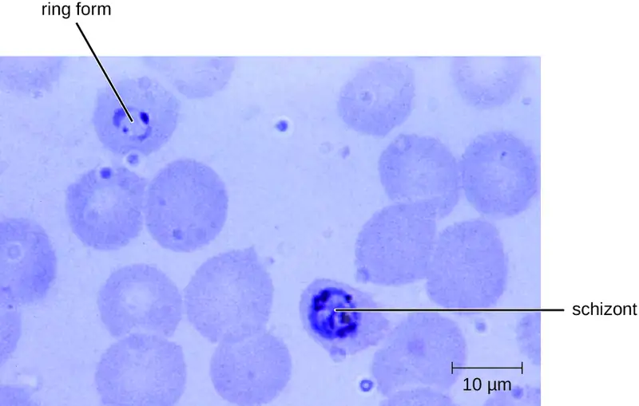
Link to Learning
Visit this site to learn how the parasite Plasmodium infects red blood cells.
The Nothing But Nets campaign, an initiative of the United Nations Foundation, has partnered with the Bill and Melinda Gates Foundation to make mosquito bed nets available in developing countries in Africa. Visit their website to learn more about their efforts to prevent malaria.
Check Your Understanding
- Why is malaria one of the most important infectious diseases?
Toxoplasmosis¶
The disease toxoplasmosis is caused by the protozoan Toxoplasma gondii. T. gondii is found in a wide variety of birds and mammals,44 and human infections are common. The Centers for Disease Control and Prevention (CDC) estimates that 22.5% of the population 12 years and older has been infected with T. gondii; but immunocompetent individuals are typically asymptomatic, however.45 Domestic cats are the only known definitive hosts for the sexual stages of T. gondii and, thus, are the main reservoirs of infection. Infected cats shed T. gondii oocysts in their feces, and these oocysts typically spread to humans through contact with fecal matter on cats’ bodies, in litter boxes, or in garden beds where outdoor cats defecate.
T. gondii has a complex life cycle that involves multiple hosts. The T. gondii life cycle begins when unsporulated oocysts are shed in the cat’s feces. These oocysts take 1–5 days to sporulate in the environment and become infective. Intermediate hosts in nature include birds and rodents, which become infected after ingesting soil, water, or plant material contaminated with the infective oocysts. Once ingested, the oocysts transform into tachyzoites that localize in the bird or rodent neural and muscle tissue, where they develop into tissue cysts. Cats may become infected after consuming birds and rodents harboring tissue cysts. Cats and other animals may also become infected directly by ingestion of sporulated oocysts in the environment. Interestingly, Toxoplasma infection appears to be able to modify the host’s behavior. Mice infected by Toxoplasma lose their fear of cat pheromones. As a result, they become easier prey for cats, facilitating the transmission of the parasite to the cat definitive host46 (Figure 25.29).
Toxoplasma infections in humans are extremely common, but most infected people are asymptomatic or have subclinical symptoms. Some studies suggest that the parasite may be able to influence the personality and psychomotor performance of infected humans, similar to the way it modifies behavior in other mammals.47 When symptoms do occur, they tend to be mild and similar to those of mononucleosis. However, asymptomatic toxoplasmosis can become problematic in certain situations. Cysts can lodge in a variety of human tissues and lie dormant for years. Reactivation of these quiescent infections can occur in immunocompromised patients following transplantation, cancer therapy, or the development of an immune disorder such as AIDS. In patients with AIDS who have toxoplasmosis, the immune system cannot combat the growth of T. gondii in body tissues; as a result, these cysts can cause encephalitis, retinitis, pneumonitis, cognitive disorders, and seizures that can eventually be fatal.
Toxoplasmosis can also pose a risk during pregnancy because tachyzoites can cross the placenta and cause serious infections in the developing fetus. The extent of fetal damage resulting from toxoplasmosis depends on the severity of maternal disease, the damage to the placenta, the gestational age of the fetus when infected, and the virulence of the organism. Congenital toxoplasmosis often leads to fetal loss or premature birth and can result in damage to the central nervous system, manifesting as mental retardation, deafness, or blindness. Consequently, pregnant people are advised by the CDC to take particular care in preparing meat, gardening, and caring for pet cats.48 Diagnosis of toxoplasmosis infection during pregnancy is usually achieved by serology including TORCH testing (the “T” in TORCH stands for toxoplasmosis). Diagnosis of congenital infections can also be achieved by detecting T. gondii DNA in amniotic fluid, using molecular methods such as PCR.
In adults, diagnosis of toxoplasmosis can include observation of tissue cysts in tissue specimens. Tissue cysts may be observed in Giemsa- or Wright-stained biopsy specimens, and CT, magnetic resonance imaging, and lumbar puncture can also be used to confirm infection (Figure 25.30).
Preventing infection is the best first-line defense against toxoplasmosis. Preventive measures include washing hands thoroughly after handling raw meat, soil, or cat litter, and avoiding consumption of vegetables possibly contaminated with cat feces. All meat should be cooked to an internal temperature of 73.9–76.7 °C (165–170 °F).
Most immunocompetent patients do not require clinical intervention for Toxoplasma infections. However, neonates, pregnant people, and immunocompromised patients can be treated with pyrimethamine and sulfadiazine—except during the first trimester of pregnancy, because these drugs can cause birth defects. Spiramycin has been used safely to reduce transmission in pregnant people with primary infection during the first trimester because it does not cross the placenta.
![Life cycle of Toxoplasma gondii. 1 - Insporulated oocysts are shed in the cat’s feces. 2 – Intermediate host in nature (including birds and rodents) become infected after ingesting soil, water or plant material contaminated with oocysts. 3 – Oocysts transform into tachyzoites shortly after ingestion. These tachyzoites localize in neural and muscle tissue and develop into tissue cyst bradyzoites. 4 - Cats eat infected animals (such as rodents or birsds) and shed unsporulated oocysts. 5 – Intermediate hosts (such as pigs and cows) ingeset oocysts from contaminated water, soil, or plant material. 6 – Humans can become infected when they eat undercooked meat of infected animals harboring tissue cysts. 7 – Humans can also become infected when they consume food or water contaminate with cat feces or by handling fecal-contaminated soil or cat’s litter box. 8 – Humans can also become infected via the placenta from fetus to mother. 10 – Tissue cysts can form in skeletal muscle, myocardium, brain, and eyes. 11 – Diagnosis of congenital infection can be achieved by detecting T. gondii DNA in amniotic fluid using molecular methods such as PCR.](img/osc-microbio-25-04-toxoplasma.webp)
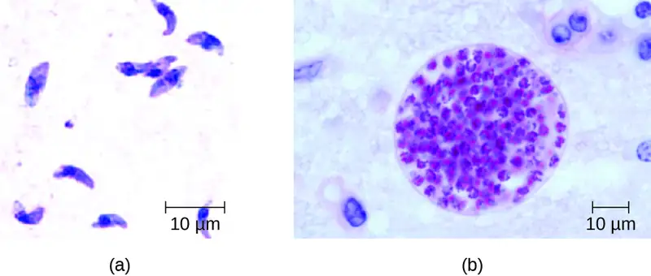
Check Your Understanding
- How does T. gondii infect humans?
Babesiosis¶
Babesiosis is a rare zoonotic infectious disease caused by Babesia spp. These parasitic protozoans infect various wild and domestic animals and can be transmitted to humans by black-legged Ixodes ticks. In humans, Babesia infect red blood cells and replicate inside the cell until it ruptures. The Babesia released from the ruptured red blood cell continue the growth cycle by invading other red blood cells. Patients may be asymptomatic, but those who do have symptoms often initially experience malaise, fatigue, chills, fever, headache, myalgia, and arthralgia. In rare cases, particularly in asplenic (absence of the spleen) patients, the elderly, and patients with AIDS, babesiosis may resemble falciparum malaria, with high fever, hemolytic anemia, hemoglobinuria (hemoglobin or blood in urine), jaundice, and renal failure, and the infection can be fatal. Previously acquired asymptomatic Babesia infection may become symptomatic if a splenectomy is performed.
Diagnosis is based mainly on the microscopic observation of parasites in blood smears (Figure 25.31). Serologic and antibody detection by IFA can also be performed and PCR-based tests are available. Many people do not require clinical intervention for Babesia infections, however, serious infections can be cleared with a combination of atovaquone and azithromycin or a combination of clindamycin and quinine.
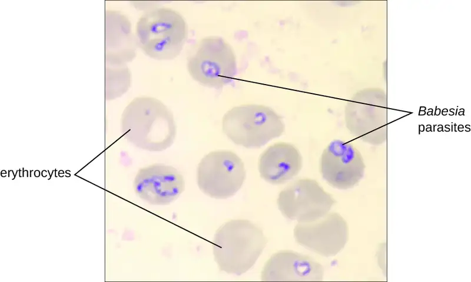
Chagas Disease¶
Also called American trypanosomiasis, Chagas disease is a zoonosis classified as a neglected tropical disease (NTD). It is caused by the flagellated protozoan Trypanosoma cruzi and is most commonly transmitted to animals and people through the feces of triatomine bugs. The triatomine bug is nicknamed the kissing bug because it frequently bites humans on the face or around the eyes; the insect often defecates near the bite and the infected fecal matter may be rubbed into the bite wound by the bitten individual (Figure 25.32). The bite itself is painless and, initially, many people show no signs of the disease. Alternative modes of transmission include contaminated blood transfusions, organ transplants from infected donors, and congenital transmission during pregnancy to a fetus.
Chagas disease is endemic throughout much of Mexico, Central America, and South America, where, according to WHO, an estimated 6 million to 7 million people are infected.49 Currently, Chagas disease is not endemic in the US, even though triatomine bugs are found in the southern half of the country.
Triatomine bugs typically are active at night, when they take blood meals by biting the faces and lips of people or animals as they sleep and often defecate near the site of the bite. Infection occurs when the host rubs the feces into their eyes, mouth, the bite wound, or another break in the skin. The protozoan then enters the blood and invades tissues of the heart and central nervous system, as well as macrophages and monocytes. Nonhuman reservoirs of T. cruzi parasites include wild animals and domesticated animals such as dogs and cats, which also act as reservoirs of the pathogen.50
There are three phases of Chagas disease: acute, intermediate, and chronic. These phases can be either asymptomatic or life-threatening depending on the immunocompetence status of the patient.
In acute phase disease, symptoms include fever, headache, myalgia, rash, vomiting, diarrhea, and enlarged spleen, liver, and lymph nodes. In addition, a localized nodule called a chagoma may form at the portal of entry, and swelling of the eyelids or the side of the face, called Romaña's sign, may occur near the bite wound. Symptoms of the acute phase may resolve spontaneously, but if untreated, the infection can persist in tissues, causing irreversible damage to the heart or brain. In rare cases, young children may die of myocarditis or meningoencephalitis during the acute phase of Chagas disease.
Following the acute phase is a prolonged intermediate phase during which few or no parasites are found in the blood and most people are asymptomatic. Many patients will remain asymptomatic for life; however, decades after exposure, an estimated 20%–30% of infected people will develop chronic disease that can be debilitating and sometimes life threatening. In the chronic phase, patients may develop painful swelling of the colon, leading to severe twisting, constipation, and bowel obstruction; painful swelling of the esophagus, leading to dysphagia and malnutrition; and flaccid cardiomegaly (enlargement of the heart), which can lead to heart failure and sudden death.
Diagnosis can be confirmed through several different tests, including direct microscopic observation of trypanosomes in the blood, IFA, EIAs, PCR, and culturing in artificial media. In endemic regions, xenodiagnoses may be used; this method involves allowing uninfected kissing bugs to feed on the patient and then examining their feces for the presence of T. cruzi.
The medications nifurtimox and benznidazole are effective treatments during the acute phase of Chagas disease. The efficacy of these drugs is much lower when the disease is in the chronic phase. Avoiding exposure to the pathogen through vector control is the most effective method of limiting this disease.
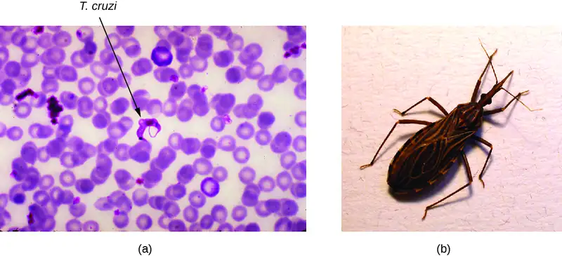
Check Your Understanding
- How do kissing bugs infect humans with Trypanosoma cruzi?
Leishmaniasis¶
Although it is classified as an NTD, leishmaniasis is relatively widespread in tropical and subtropical regions, affecting people in more than 90 countries. It is caused by approximately 20 different species of Leishmania, protozoan parasites that are transmitted by sand fly vectors such as Phlebotomus spp. and Lutzomyia spp. Dogs, cats, sheep, horses, cattle rodents, and humans can all serve as reservoirs.
The Leishmania protozoan is phagocytosed by macrophages but uses virulence factors to avoid destruction within the phagolysosome. The virulence factors inhibit the phagolysosome enzymes that would otherwise destroy the parasite. The parasite reproduces within the macrophage, lyses it, and the progeny infect new macrophages (see Micro Connections: When Phagocytosis Fails).
The three major clinical forms of leishmaniasis are cutaneous (oriental sore, Delhi boil, Aleppo boil), visceral (kala-azar, Dumdum fever), and mucosal (espundia). The most common form of disease is cutaneous leishmaniasis, which is characterized by the formation of sores at the site of the insect bite that may start out as papules or nodules before becoming large ulcers (Figure 25.33).
It may take visceral leishmaniasis months and sometimes years to develop, leading to enlargement of the lymph nodes, liver, spleen, and bone marrow. The damage to these body sites triggers fever, weight loss, and swelling of the spleen and liver. It also causes a decrease in the number of red blood cells (anemia), white blood cells (leukopenia), and platelets (thrombocytopenia), causing the patient to become immunocompromised and more susceptible to fatal infections of the lungs and gastrointestinal tract.
The mucosal form of leishmaniasis is one of the less common forms of the disease. It causes a lesion similar to the cutaneous form but mucosal leishmaniasis is associated with mucous membranes of the mouth, nares, or pharynx, and can be destructive and disfiguring. Mucosal leishmaniasis occurs less frequently when the original cutaneous (skin) infection is promptly treated.
Definitive diagnosis of leishmaniasis is made by visualizing organisms in Giemsa-stained smears, by isolating Leishmania protozoans in cultures, or by PCR-based assays of aspirates from infected tissues. Specific DNA probes or analysis of cultured parasites can help to distinguish Leishmania species that are causing simple cutaneous leishmaniasis from those capable of causing mucosal leishmaniasis.
Cutaneous leishmaniasis is usually not treated. The lesions will resolve after weeks (or several months), but may result in scarring. Recurrence rates are low for this disease. More serious infections can be treated with stibogluconate (antimony gluconate), amphotericin B, and miltefosine.
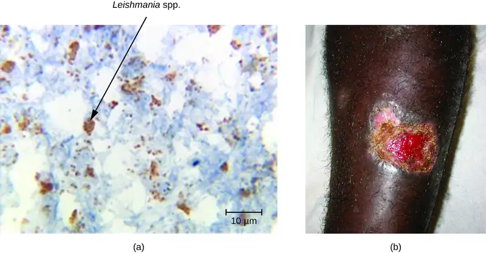
Check Your Understanding
- Compare the mucosal and cutaneous forms of leishmaniasis.
Schistosomiasis¶
Schistosomiasis (bilharzia) is an NTD caused by blood flukes in the genus Schistosoma that are native to the Caribbean, South America, Middle East, Asia, and Africa. Most human schistosomiasis cases are caused by Schistosoma mansoni, S. haematobium, or S. japonicum. Schistosoma are the only trematodes that invade through the skin; all other trematodes infect by ingestion. WHO estimates that at least 258 million people required preventive treatment for schistosomiasis in 2014.51
Infected human hosts shed Schistosoma eggs in urine and feces, which can contaminate freshwater habitats of snails that serve as intermediate hosts. The eggs hatch in the water, releasing miracidia, an intermediate growth stage of the Schistosoma that infect the snails. The miracidia mature and multiply inside the snails, transforming into cercariae that leave the snail and enter the water, where they can penetrate the skin of swimmers and bathers. The cercariae migrate through human tissue and enter the bloodstream, where they mature into adult male and female worms that mate and release fertilized eggs. The eggs travel through the bloodstream and penetrate various body sites, including the bladder or intestine, from which they are excreted in urine or stool to start the life cycle over again (Figure 5.22).
A few days after infection, patients may develop a rash or itchy skin associated with the site of cercariae penetration. Within 1–2 months of infection, symptoms may develop, including fever, chills, cough, and myalgia, as eggs that are not excreted circulate through the body. After years of infection, the eggs become lodged in tissues and trigger inflammation and scarring that can damage the liver, central nervous system, intestine, spleen, lungs, and bladder. This may cause abdominal pain, enlargement of the liver, blood in the urine or stool, and problems passing urine. Increased risk for bladder cancer is also associated with chronic Schistosoma infection. In addition, children who are repeatedly infected can develop malnutrition, anemia, and learning difficulties.
Diagnosis of schistosomiasis is made by the microscopic observation of eggs in feces or urine, intestine or bladder tissue specimens, or serologic tests. The drug praziquantel is effective for the treatment of all schistosome infections. Improving wastewater management and educating at-risk populations to limit exposure to contaminated water can help control the spread of the disease.
Cercarial Dermatitis¶
The cercaria of some species of Schistosoma can only transform into adult worms and complete their life cycle in animal hosts such as migratory birds and mammals. The cercaria of these worms are still capable of penetrating human skin, but they are unable to establish a productive infection in human tissue. Still, the presence of the cercaria in small blood vessels triggers an immune response, resulting in itchy raised bumps called cercarial dermatitis (also known as swimmer’s itch or clam digger's itch). Although it is uncomfortable, cercarial dermatitis is typically self-limiting and rarely serious. Antihistamines and antipruritics can be used to limit inflammation and itching, respectively.
Check Your Understanding
- How do schistosome infections in humans occur?
Disease Profile: Common Eukaryotic Pathogens of the Human Circulatory System
Protozoan and helminthic infections are prevalent in the developing world. A few of the more important parasitic infections are summarized in Figure 25.34.
![Table titled: Parasitic Diseases of the Circulatory and Lymphatic Systems. Columns: Disease, Pathogen, Signs and Symptoms, Transmission, Diagnostic Tests, Antimicrobial Drugs, Protozoa. Babesiosis; Babesia spp.; Malaise, chills, fever, headache, myalgia, arthralgia; From animals to humans via Ixodes tick vectors; Blood smear, serology, IFA, and PCR; Atovaquone and azithromycin or clindamycin and quinine. Chagas disease ; Trypanosoma cruzi; Fever, headache, body aches, swollen lymph nodes; potentially fatal; Between humans or from animal reservoirs via triatomine (kissing bug) vector; Blood smear, IFA, EIA, PCR, xenodiagnoses; Nifurtimox, benznidazole. Leishmaniasis Leishmania spp.; Ulcer; enlargement of the lymph nodes, liver, spleen, and other organs; Between humans or from animal reservoirs via sand fly (Phlebotomus spp., Lutzomyia spp.) vectors; Blood smear, culture, PCR, DNA probe, biopsy; Stibogluconate, amphotericin B, miltefosine. Malaria; Plasmodium vivax, P. malariae, P. falciparum, P. ovale, P. knowlesi; Extreme fever, chills, myalgia, nausea, and vomiting, possibly leading to organ failure and death; Between humans via Anopheles mosquito vectors; Blood smear, EIA; Chloroquine, atovaquone, artemether, and lumefantrine. Toxoplasmosis Toxoplasma gondii; Tissue cysts; in pregnant people, birth defects or miscarriage; Contact with feces of infected cat; eating contaminated vegetables or undercooked meat of infected animal; Serological tests, direct detection of pathogen in tissue sections; Sulfadiazine, pyrimethamine, spiramycin; Helminths. Schistosomiasis; Schistosoma spp.; Rash, fever, chills, myalgia; chronic inflammation and scarring of liver, spleen, and other organs where cysts develop; Snail hosts release cercaria into freshwater; cercaria burrow into skin of swimmers and bathers; Eggs in stool or urine, tissue biopsy, serological testing; Praziquantel..](img/osc-microbio-25-04-protozoa.webp)
Clinical Focus: Resolution
Despite continued antibiotic treatment and the removal of the venous catheter, Barbara’s condition further declined. She began to show signs of shock and her blood pressure dropped to 77/50 mmHg. Anti-inflammatory drugs and drotrecogin-α were administered to combat sepsis. However, by the seventh day of hospitalization, Barbara experienced hepatic and renal failure and died.
Staphylococcus aureus most likely formed a biofilm on the surface of Barbara’s catheter. From there, the bacteria were chronically shed into her circulation and produced the initial clinical symptoms. The chemotherapeutic therapies failed in large part because of the drug-resistant MRSA isolate. Virulence factors like leukocidin and hemolysins also interfered with her immune response. Barbara’s ultimate decline may have been a consequence of the production of enterotoxins and toxic shock syndrome toxin (TSST), which can initiate toxic shock.
Venous catheters are common life-saving interventions for many patients requiring long-term administration of medication or fluids. However, they are also common sites of bloodstream infections. The World Health Organization estimates that there are up to 80,000 catheter-related bloodstream infections each year in the US, resulting in about 20,000 deaths.52
Go back to the previous Clinical Focus box.
Chapter Review¶
Key Concepts and Summary¶
25.1 Anatomy of the Circulatory and Lymphatic Systems¶
- The circulatory system moves blood throughout the body and has no normal microbiota.
- The lymphatic system moves fluids from the interstitial spaces of tissues toward the circulatory system and filters the lymph. It also has no normal microbiota.
- The circulatory and lymphatic systems are home to many components of the host immune defenses.
- Infections of the circulatory system may occur after a break in the skin barrier or they may enter the bloodstream at the site of a localized infection. Pathogens or toxins in the bloodstream can spread rapidly throughout the body and can provoke systemic and sometimes fatal inflammatory responses such as SIRS, sepsis, and endocarditis.
- Infections of the lymphatic system can cause lymphangitis and lymphadenitis.
25.2 Bacterial Infections of the Circulatory and Lymphatic Systems¶
- Bacterial infections of the circulatory system are almost universally serious. Left untreated, most have high mortality rates.
- Bacterial pathogens usually require a breach in the immune defenses to colonize the circulatory system. Most often, this involves a wound or the bite of an arthropod vector, but it can also occur in hospital settings and result in nosocomial infections.
- Sepsis from both gram-negative and gram-positive bacteria, puerperal fever, rheumatic fever, endocarditis, gas gangrene, osteomyelitis, and toxic shock syndrome are typically a result of injury or introduction of bacteria by medical or surgical intervention.
- Tularemia, brucellosis, cat-scratch fever, rat-bite fever, and bubonic plague are zoonotic diseases transmitted by biological vectors
- Ehrlichiosis, anaplasmosis, endemic and murine typhus, Rocky Mountain spotted fever, Lyme disease, relapsing fever, and trench fever are transmitted by arthropod vectors.
- Because their symptoms are so similar to those of other diseases, many bacterial infections of the circulatory system are difficult to diagnose.
- Standard antibiotic therapies are effective for the treatment of most bacterial infections of the circulatory system, unless the bacterium is resistant, in which case synergistic treatment may be required.
- The systemic immune response to a bacteremia, which involves the release of excessive amounts of cytokines, can sometimes be more damaging to the host than the infection itself.
25.3 Viral Infections of the Circulatory and Lymphatic Systems¶
- Human herpesviruses such Epstein-Barr virus (HHV-4) and cytomegalovirus (HHV-5) are widely distributed. The former is associated with infectious mononucleosis and Burkitt lymphoma, and the latter can cause serious congenital infections as well as serious disease in immunocompromised adults.
- Arboviral diseases such as yellow fever, dengue fever, and chikungunya fever are characterized by high fevers and vascular damage that can often be fatal. Ebola virus disease is a highly contagious and often fatal infection spread through contact with bodily fluids.
- Although there is a vaccine available for yellow fever, treatments for patients with yellow fever, dengue, chikungunya fever, and Ebola virus disease are limited to supportive therapies.
- Patients infected with human immunodeficiency virus (HIV) progress through three stages of disease, culminating in AIDS. Antiretroviral therapy (ART) uses various combinations of drugs to suppress viral loads, extending the period of latency and reducing the likelihood of transmission.
- Vector control and animal reservoir control remain the best defenses against most viruses that cause diseases of the circulatory system.
25.4 Parasitic Infections of the Circulatory and Lymphatic Systems¶
- Malaria is a protozoan parasite that remains an important cause of death primarily in the tropics. Several species in the genus Plasmodium are responsible for malaria and all are transmitted by Anopheles mosquitoes. Plasmodium infects and destroys human red blood cells, leading to organ damage, anemia, blood vessel necrosis, and death. Malaria can be treated with various antimalarial drugs and prevented through vector control.
- Toxoplasmosis is a widespread protozoal infection that can cause serious infections in the immunocompromised and in developing fetuses. Domestic cats are the definitive host.
- Babesiosis is a generally asymptomatic infection of red blood cells that can causes malaria-like symptoms in elderly, immunocompromised, or asplenic patients.
- Chagas disease is a tropical disease transmitted by triatomine bugs. The trypanosome infects heart, neural tissues, monocytes, and phagocytes, often remaining latent for many years before causing serious and sometimes fatal damage to the digestive system and heart.
- Leishmaniasis is caused by the protozoan Leishmania and is transmitted by sand flies. Symptoms are generally mild, but serious cases may cause organ damage, anemia, and loss of immune competence.
- Schistosomiasis is caused by a fluke transmitted by snails. The fluke moves throughout the body in the blood stream and chronically infects various tissues, leading to organ damage.
Multiple Choice¶
25.1 Anatomy of the Circulatory and Lymphatic Systems¶
1. Which term refers to an inflammation of the blood vessels?
- lymphangitis
- endocarditis
- pericarditis
- vasculitis
Answer
D
2. Which of the following is located in the interstitial spaces within tissues and releases nutrients, immune factors, and oxygen to those tissues?
- lymphatics
- arterioles
- capillaries
- veins
Answer
C
3. Which of these conditions results in the formation of a bubo?
- lymphangitis
- lymphadenitis
- ischemia
- vasculitis
Answer
B
4. Which of the following is where are most microbes filtered out of the fluids that accumulate in the body tissues?
- spleen
- lymph nodes
- pericardium
- blood capillaries
Answer
B
25.2 Bacterial Infections of the Circulatory and Lymphatic Systems¶
5. Which of the following diseases is caused by a spirochete?
- tularemia
- relapsing fever
- rheumatic fever
- Rocky Mountain spotted fever
Answer
B
6. Which of the following diseases is transmitted by body lice?
- tularemia
- bubonic plague
- murine typhus
- epidemic typhus
Answer
D
7. What disease is most associated with Clostridium perfringens?
- endocarditis
- osteomyelitis
- gas gangrene
- rat bite fever
Answer
C
8. Which bacterial pathogen causes plague?
- Yersinia pestis
- Bacillus moniliformis
- Bartonella quintana
- Rickettsia rickettsii
Answer
A
25.3 Viral Infections of the Circulatory and Lymphatic Systems¶
9. Which of the following viruses is most widespread in the human population?
- human immunodeficiency virus
- Ebola virus
- Epstein-Barr virus
- hantavirus
Answer
C
10. Which of these viruses is spread through mouse urine or feces?
- Epstein-Barr
- hantavirus
- human immunodeficiency virus
- cytomegalovirus
Answer
B
11. A patient at a clinic has tested positive for HIV. Her blood contained 700/µL CD4 T cells and she does not have any apparent illness. Her infection is in which stage?
- 1
- 2
- 3
Answer
A
25.4 Parasitic Infections of the Circulatory and Lymphatic Systems¶
12. Which of the following diseases is caused by a helminth?
- leishmaniasis
- malaria
- Chagas disease
- schistosomiasis
Answer
D
13. Which of these is the most common form of leishmaniasis?
- cutaneous
- mucosal
- visceral
- intestinal
Answer
A
14. Which of the following is a causative agent of malaria?
- Trypanosoma cruzi
- Toxoplasma gondii
- Plasmodium falciparum
- Schistosoma mansoni
Answer
C
15. Which of the following diseases does not involve an arthropod vector?
- schistosomiasis
- malaria
- Chagas disease
- babesiosis
Answer
A
Fill in the Blank¶
25.1 Anatomy of the Circulatory and Lymphatic Systems¶
16. Vasculitis can cause blood to leak from damaged vessels, forming purple spots called ________.
Answer
petechiae
17. The lymph reenters the vascular circulation at ________.
Answer
the subclavian veins
25.2 Bacterial Infections of the Circulatory and Lymphatic Systems¶
18. Lyme disease is characterized by a(n) ________ that forms at the site of infection.
Answer
bull’s eye-rash
19. ________ refers to a loss of blood pressure resulting from a system-wide infection.
Answer
Septic shock
25.3 Viral Infections of the Circulatory and Lymphatic Systems¶
20. ________ is a cancer that forms in patients with HHV-4 and malaria coinfections.
Answer
Burkitt lymphoma
21. ________ are transmitted by vectors such as ticks or mosquitoes.
Answer
Arboviruses
22. Infectious mononucleosis is caused by ________ infections.
Answer
Epstein-Barr virus
25.4 Parasitic Infections of the Circulatory and Lymphatic Systems¶
23. The ________ mosquito is the biological vector for malaria.
Answer
Anopheles
24. The kissing bug is the biological vector for ________.
Answer
Chagas disease
25. Cercarial dermatitis is also known as ________.
Answer
swimmer’s itch
Short Answer¶
25.1 Anatomy of the Circulatory and Lymphatic Systems¶
26. How do lymph nodes help to maintain a microbial-free circulatory and lymphatic system?
25.2 Bacterial Infections of the Circulatory and Lymphatic Systems¶
27. What are the three forms of plague and how are they contracted?
28. Compare epidemic and murine typhus.
25.3 Viral Infections of the Circulatory and Lymphatic Systems¶
29. Describe the progression of an HIV infection over time with regard to the number of circulating viruses, host antibodies, and CD4 T cells.
30. Describe the general types of diagnostic tests used to diagnose patients infected with HIV.
31. Identify the general categories of drugs used in ART used to treat patients infected with HIV.
25.4 Parasitic Infections of the Circulatory and Lymphatic Systems¶
32. Describe main cause of Plasmodium falciparum infection symptoms.
33. Why should pregnant people avoid cleaning their cat’s litter box or do so with protective gloves?
Critical Thinking¶
25.1 Anatomy of the Circulatory and Lymphatic Systems¶
34. What term refers to the red streaks seen on this patient’s skin? What is likely causing this condition?
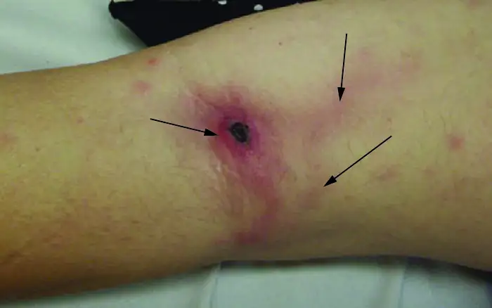
35. Why would septicemia be considered a more serious condition than bacteremia?
25.2 Bacterial Infections of the Circulatory and Lymphatic Systems¶
36. Why are most vascular pathogens poorly communicable from person to person?
37. How have human behaviors contributed to the spread or control of arthropod-borne vascular diseases?
25.3 Viral Infections of the Circulatory and Lymphatic Systems¶
38. Which is a bigger threat to the US population, Ebola or yellow fever? Why?
25.4 Parasitic Infections of the Circulatory and Lymphatic Systems¶
39. What measures can be taken to reduce the likelihood of malaria reemerging in the US?
Adapted from Microbiology by OpenStax, licensed under CC BY 4.0. Access the original for free at openstax.org. Changes: converted to the web reading format of The Open Book Project.
-
Centers for Disease Control and Prevention. “The History of Yellow Fever.” http://www.cdc.gov/travel-training/local/HistoryEpidemiologyandVaccination/page27568.html ↩
-
C.L. Gardner, K.D. Ryman. “Yellow Fever: A Reemerging Threat.” Clinical Laboratory Medicine 30 no. 1 (2010):237–260. ↩
-
S.P. LaRosa. “Sepsis.” 2010. http://www.clevelandclinicmeded.com/medicalpubs/diseasemanagement/infectious-disease/sepsis/. ↩
-
D.C. Angus, T. Van der Poll. “Severe Sepsis and Septic Shock.” New England Journal of Medicine 369, no. 9 (2013):840–851. ↩
-
Centers for Disease Control and Prevention. “Toxic Shock Syndrome (Other Than Streptococcal) (TSS) 2011 Case Definition.” https://wwwn.cdc.gov/nndss/conditions/toxic-shock-syndrome-other-than-streptococcal/case-definition/2011/. Accessed July 25, 2016. ↩
-
Centers for Disease Control and Prevention. “Streptococcal Toxic Shock Syndrome (STSS) (Streptococcus pyogenes) 2010 Case Definition.” https://wwwn.cdc.gov/nndss/conditions/streptococcal-toxic-shock-syndrome/case-definition/2010/. Accessed July 25, 2016. ↩
-
M.E. Shirtliff, Mader JT. “Acute Septic Arthritis.” Clinical Microbiology Reviews 15 no. 4 (2002):527–544. ↩
-
J.R. Maneiro et al. “Predictors of Treatment Failure and Mortality in Native Septic Arthritis.” Clinical Rheumatology 34, no. 11 (2015):1961–1967. ↩
-
M. Vazquez. “Osteomyelitis in Children.” Current Opinion in Pediatrics 14, no. 1 (2002):112–115. ↩
-
A. Beaudoin et al. “Acute Rheumatic Fever and Rheumatic Heart Disease Among Children—American Samoa, 2011–2012.” Morbidity and Mortality Weekly Report 64 no. 20 (2015):555–558. ↩
-
M.A. Gerber et al. “Prevention of Rheumatic Fever and Diagnosis and Treatment of Acute Streptococcal Pharyngitis: A Scientific Statement From the American Heart Association Rheumatic Fever, Endocarditis, and Kawasaki Disease Committee of the Council on Cardiovascular Disease in the Young, the Interdisciplinary Council on Functional Genomics and Translational Biology, and the Interdisciplinary Council on Quality of Care and Outcomes Research: Endorsed by the American Academy of Pediatrics.” Circulation 119, no. 11 (2009):1541–1551. ↩
-
World Health Organization. “WHO Guidelines on Tularaemia.” 2007. http://www.cdc.gov/tularemia/resources/whotularemiamanual.pdf. Accessed July 26, 2016. ↩
-
MOH Key Laboratory of Systems Biology of Pathogens. “Virulence Factors of Pathogenic Bacteria, Yersinia.” http://www.mgc.ac.cn/cgi-bin/VFs/genus.cgi?Genus=Yersinia. Accessed September 9, 2016. ↩
-
Rosen, William. Justinian’s Flea: Plague, Empire, and the Birth of Europe. Viking Adult; pg 3; ISBN 978-0-670-03855-8. ↩
-
Benedictow, Ole J. 2004. The Black Death 1346-1353: The Complete History. Woodbridge: Boydell Press. ↩
-
Centers for Disease Control and Prevention. “Plague: History.” http://www.cdc.gov/plague/history/. Accessed September 15, 2016. ↩
-
J.S. Bakken et al. “Diagnosis and Management of Tickborne Rickettsial Diseases: Rocky Mountain Spotted Fever, Ehrlichioses, and Anaplasmosis–United States. A Practical Guide for Physicians and Other Health Care and Public Health Professionals.” MMWR Recommendations and Reports 55 no. RR04 (2006):1–27. ↩
-
MOH Key Laboratory of Systems Biology of Pathogens, “Virulence Factors of Pathogenic Bacteria, Anaplasma” 2016. http://www.mgc.ac.cn/cgi-bin/VFs/jsif/main.cgi. Accessed July, 26, 2016. ↩
-
Centers for Disease Control and Prevention. “Ehrlichiosis, Symptoms, Diagnosis, and Treatment.” 2016. https://www.cdc.gov/ehrlichiosis/symptoms/index.html. Accessed July 29, 2016. ↩
-
Drali, R., Brouqui, P. and Raoult, D. “Typhus in World War I.” Microbiology Today 41 (2014) 2:58–61. ↩
-
Centers for Disease Control and Prevention. CDC Health Information for International Travel 2014: The Yellow Book. Oxford University Press, 2013. http://wwwnc.cdc.gov/travel/yellowbook/2016/infectious-diseases-related-to-travel/rickettsial-spotted-typhus-fevers-related-infections-anaplasmosis-ehrlichiosis. Accessed July 26, 2016. ↩
-
World Health Organization. “Typhus.” 1997. http://www.who.int/mediacentre/factsheets/fs162/en/. Accessed July 26, 2016. ↩
-
Centers for Disease Control and Prevention. “Rocky Mountain Spotted Fever (RMSF): Statistics and Epidemiology.” http://www.cdc.gov/rmsf/stats/index.html. Accessed Sept 16, 2016. ↩
-
Centers for Disease Control and Prevention. “Lyme Disease. Data and Statistics.” 2015. http://www.cdc.gov/lyme/stats/index.html. Accessed July 26, 2016. ↩
-
Centers for Disease Control and Prevention. “Signs and Symptoms of Untreated Lyme Disease.” 2015. http://www.cdc.gov/lyme/signs_symptoms/index.html. Accessed July 27, 2016. ↩
-
Centers for Disease Control and Prevention. “Ticks. Symptoms of Tickborne Illness.” 2015. http://www.cdc.gov/ticks/symptoms.html. Accessed July 27, 2016. ↩
-
Centers for Disease Control and Prevention. “Cytomegalovirus (CMV) and Congenital CMV Infection: About CMV.” 2016. http://www.cdc.gov/cmv/transmission.html. Accessed July 28, 2016. ↩
-
Centers for Disease Control and Prevention. “Cytomegalovirus (CMV) and Congenital CMV Infection: Babies Born with CMV (Congenital CMV Infection).” 2016. http://www.cdc.gov/cmv/congenital-infection.html. Accessed July 28, 2016. ↩
-
ibid. ↩
-
E. Cordero et al. “Cytomegalovirus Disease in Kidney Transplant Recipients: Incidence, Clinical Profile, and Risk Factors.” Transplantation Proceedings 44 no. 3 (2012):694–700. ↩
-
L.M. Mofenson et al. “Guidelines for the Prevention and Treatment of Opportunistic Infections Among HIV-Exposed and HIV-Infected Children: Recommendations From CDC, the National Institutes of Health, the HIV Medicine Association of the Infectious Diseases Society of America, the Pediatric Infectious Diseases Society, and the American Academy of Pediatrics.” MMWR Recommendations and Reports 58 no. RR-11 (2009):1–166. ↩
-
Centers for Disease Control and Prevention. “History Timeline Transcript.” http://www.cdc.gov/travel-training/local/HistoryEpidemiologyandVaccination/HistoryTimelineTranscript.pdf. Accessed July 28, 2016. ↩
-
Centers for Disease Control and Prevention. “Yellow Fever, Symptoms and Treatment.” 2015 http://www.cdc.gov/yellowfever/symptoms/index.html. Accessed July 28, 2016. ↩
-
J.T. Cathey, J.S. Marr. “Yellow fever, Asia and the East African Slave Trade.” Transactions of the Royal Society of Tropical Medicine and Hygiene 108, no. 5 (2014):252–257. ↩
-
Centers for Disease Control and Prevention. “Dengue, Epidemiology.” 2014. http://www.cdc.gov/dengue/epidemiology/index.html. Accessed July 28, 2016. ↩
-
C.R. Pringle “Dengue.” MSD Manual: Consumer Version. https://www.msdmanuals.com/home/infections/viral-infections/dengue. 2016. Accessed Sept 15, 2016. ↩
-
HealthMap. “2014 Ebola Outbreaks.” http://www.healthmap.org/ebola/#timeline. Accessed July 28, 2016. ↩
-
World Health Organization. “Hantavirus Diseases.” 2016. http://www.who.int/ith/diseases/hantavirus/en/. Accessed July 28, 2016. ↩
-
ibid. ↩
-
Centers for Disease Control and Prevention. “Hantavirus: Treatment.” 2012. http://www.cdc.gov/hantavirus/technical/hps/treatment.html. Accessed July 28, 2016. ↩
-
World Health Organization. “HIV/AIDS: Fact Sheet.” 2016.http://www.who.int/mediacentre/factsheets/fs360/en/. Accessed July 28, 2016. ↩
-
ibid. ↩
-
World Health Organization. “World Malaria Report 2015: Summary.” 2015. http://www.who.int/malaria/publications/world-malaria-report-2015/report/en/. Accessed July 28, 2016. ↩
-
A.M. Tenter et al.. “Toxoplasma gondii: From Animals to Humans.” International Journal for Parasitology 30 no. 12-13 (2000):1217–1258. ↩
-
Centers for Disease Control and Prevention. “Parasites - Toxoplasmosis (Toxoplasma Infection). Epidemiology & Risk Factors.” 2015 http://www.cdc.gov/parasites/toxoplasmosis/epi.html. Accessed July 28, 2016. ↩
-
J. Flegr. “Effects of Toxoplasma on Human Behavior.” Schizophrenia Bulletin 33, no. 3 (2007):757–760. ↩
-
Ibid ↩
-
Centers for Disease Control and Prevention. “Parasites - Toxoplasmosis (Toxoplasma infection). Toxoplasmosis Frequently Asked Questions (FAQs).” 2013. http://www.cdc.gov/parasites/toxoplasmosis/gen_info/faqs.html. Accessed July 28, 2016. ↩
-
World Health Organization. “Chagas disease (American trypanosomiasis). Fact Sheet.” 2016. http://www.who.int/mediacentre/factsheets/fs340/en/. Accessed July 29, 2016. ↩
-
C.E. Reisenman et al. “Infection of Kissing Bugs With Trypanosoma cruzi, Tucson, Arizona, USA.” Emerging Infectious Diseases 16 no. 3 (2010):400–405. ↩
-
World Health Organization. “Schistosomiasis. Fact Sheet.” 2016. http://www.who.int/mediacentre/factsheets/fs115/en/. Accessed July 29, 2016. ↩
-
World Health Organization. “Patient Safety, Preventing Bloodstream Infections From Central Line Venous Catheters.” 2016. http://www.who.int/patientsafety/implementation/bsi/en/. Accessed July 29, 2016. ↩